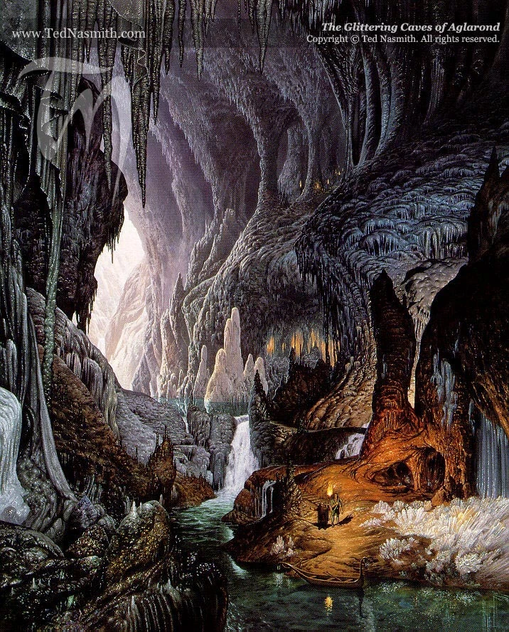
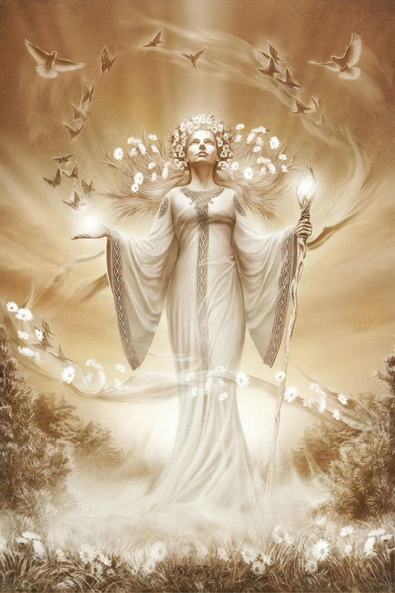

Adanedhel L’homme-Elfe, nom donné à Túrin à Nargothrond.
Adûnakhôr Seigneur de l’Ouest, titre pris par le vingtième Roi de Númenor, le premier à le faire en langue adûnaic (de Númenor). En quenya son titre était Herunúmen.
Adurant Le sixième et le plus au sud des affluents du Gelion à Ossiriand. Ce nom signifie double cours, et renvoie à son lit divisé autour de l’île de Tol Galen.
Aeglos Pointe de Neige, la lance de Gil-galad.
Aegnor Quatrième fils de Finarfin, qui tenait les versants nord de Dorthonion avec son frère Angrod. Tué à Dagor Bragollach. Son nom signifie Feu Cruel.
Aelin-uial Lac du Crépuscule, là où l’Aris se jette dans le Sirion.
Aerandir Vagabond des Mers, un des trois marins qui accompagnèrent Eärendil dans ses voyages.
Aerin Parente de Húrin de Dor-lómin. Prise pour femme par Brodda l’Oriental. Aida Morwen après Nirnaeth Arnoediad.
Agarwaen Le sanglant, nom que se donna Túrin en arrivant à Nargothrond.
Aglarond La Caverne Étincelante dans le Gouffre du Heaume sur Ered Nimrais (voir Les Deux Tours).

Aglon La Passe étroite entre Dorthonion et les hauteurs à l’ouest d’Himring.
Ainulindalë La Musique des Ainur, aussi appelée La Grande Musique, le (Grand) Chant. Aussi le nom du récit de la création qu’on dit avoir été composé par Rúmil de Tirion aux Temps Anciens.
Ainur Les Bénis, les premiers êtres créés par Ilúvatar, l’ordre des Valar et des Maiar, nés avant Eä.
Akallabêth L’Engloutie, mot adûnaic (de Númenor) équivalent à Atalantë en quenya. Titre aussi du récit de la Submersion de Númenor.
Alcarinquë La Glorieuse, nom d’une étoile.
Alcarondas Le Grand navire d’Ar-Pharazôn sur lequel il partit pour Aman.
Aldaron Seigneur des Arbres, nom quenya du Valar Oromë.
Aldudénië Complainte des Deux Arbres, composée par un Elfe Vanyar appelé Elemmírë.
Almaren La première demeure des Valar sur Arda, avant la seconde attaque de Melkor : une île sur un grand lac au centre des Terres du Milieu.
Alqualondë Le Port des Cygnes, plus grande ville et premier port des Teleri sur les rives d’Aman.
Aman Béni, libre de tout mal, nom du pays à l’ouest, au-delà de la Grande Mer, où vécurent les Valar après avoir quitté l’Île d’Almaren. Souvent nommée Le Royaume Bienheureux.
Amandil L’Amoureux d’Aman, dernier seigneur d’Andúnië à Númenor, descendant d’Elros et père d’Elendil. Partit pour Valinor et ne revint pas.
Amarië Elfe des Vanyar, ami de Finrod Felagund, qui resta à Valinor.
Ami des Elfes Les Humains des trois Maisons de Bëor, d’Haleth, et d’Hador, les Edain. Employé aussi dans Akallabêth et dans Les Anneaux du Pouvoir pour les Númenóréens qui ne s’écartèrent pas des Eldar. Voir Elendili. Il est fait certainement référence aux Humains de Gondor et aux Dúnedain du Nord.
Amlach Fils d’Imlach, fils de Marach. Ayant semé la discorde chez les Humains d’Estolad, il se repentit et suivit Maedhros.
Amon Amarth Mont Destin, nom donné à Orodruin quand ses flammes se réveillèrent après le retour de Sauron de Númenor.
Amon Ereb La Colline Solitaire, ou simplement Ereb, à l’est de Beleriand, entre Ramdal et le fleuve Gelion.
Amon Ethir La Colline des Espions, élevée par Finrod Felagund à l’est des portes de Nargothrond.
Amon Gwareth La colline où fut construite Gondolin, au milieu de la plaine de Tumladen.
Amon Obel Une colline au milieu de la forêt de Brethil, où fut construite Ephel Brandir.
Amon Rûdh La Colline Chauve, une hauteur isolée dans les landes au sud de Brethil, demeure de Mîm et repaire des proscrits de Túrin.
Amon Sûl Colline du Vent au royaume d’Arnor.
Amon Uilos Nom sindarin de Oiolossë.
Amras Frère jumeau d’Amrod, le plus jeune fils de Fëanor. Tué avec Amrod pendant l’attaque du peuple d’Eärendil à l’embouchure du Sirion.
Amrod Voir Amras.
Anach Col menant de Taur-nu-Fuin (Dorthonion) à l’extrémité ouest d’Ered Gorgoroth.
Anadûnê L’Occidentale, nom de Númenor en langage adûnaic (de Númenor), voir ce terme.
Anar Nom quenya du Soleil.
Anárion Plus jeune fils d’Elendil, échappa à la Submersion de Númenor avec son père et son frère Isildur, fonda sur les Terres du Milieu le royaume des Exilés. Seigneur de Minas Anor, tué au siège de Barad-dûr.
Anarríma Nom d’une constellation.
Ancalagon Le plus grand des dragons ailés de Morgoth, tué par Eärendil.
Ancien Roi Manwë.
Andor Le Pays de l’Offrande : Númenor.
Andram Le Grand Mur, nom des chutes du fleuve qui séparent en deux Beleriand.
Androth Cavernes dans les collines de Mithrim où Tuor fut élevé par les Elfes Gris.
Anduin Le Grand Fleuve à l’est des Montagnes de Brume, désigné aussi comme Le Fleuve ou Le Grand Fleuve.
Andúnië Ville et port sur la côte ouest de Númenor.
Anfauglir Un des noms du loup Carcharoth, traduit dans le texte par les Mâchoires de la Soif.
Anfauglith Nom de la plaine d’Ard-galen dévastée par Morgoth pendant la Bataille de la Flamme Subite, traduit dans le texte par La Poussière d’Agonie.
Angainor Chaîne forgée par Aulë dont Melkor fut deux fois enchaîné.
Angband Prison de Fer, Enfer d’Acier, la grande forteresse-prison de Morgoth au nord-ouest des Terres du Milieu.
Anghabar Les Demeures de Fer, mine dans le Cercle des Montagnes qui entourent la plaine de Gondolin.
Anglachel Épée forgée dans le minerai d’un météore, donnée par Eöl à Thingol qui la donna à Beleg. Nommée Gurthang après avoir été reforgée par Túrin.
Angrenost La Forteresse d’Acier, citadelle des Númenóréens sur la côte ouest de Gondor, habitée ensuite par le Mage Curunír (Saruman). Voir Isengard.
Angrim Père de Gorlim le Malheureux.
Angrist Le Couperet, poignard fait par Telchar de Nogrod, pris à Curufin par Beren qui s’en servit pour enlever le Silmaril de la couronne de Morgoth.
Angrod Troisième fils de Finarfin, tenait avec son frère Aegnor les versants nord de Dorthonion. Tué à Dagor Bragollach.
Anguirel Glaive d’Eöl, fait du même métal qu’Anglachel.
Annael Elfe Gris de Mithrim, père adoptif de Tuor.
Annatar Le Dispensateur, nom que se donna Sauron au Second Age, au temps où il revint sous une belle apparence parmi les Eldar restés sur les Terres du Milieu.
Anneau Rouge Voir Narya.
Année des Lamentations (L’) L’année de Nirnaeth Arnoediad.
Annon-in-Gelydh Porte des Noldor, entrée d’une rivière souterraine dans les collines à l’ouest de Dor-lómin et conduisant à Cirith Ninniach.
Annúminas La Tour de l’Occident (de l’Occidentale, Númenor). Ville des Rois d’Arnor près du Lac Nennuial.
Anor Voir Minas Anor.
Apanónar Les Nouveaux Venus, nom elfe pour les Humains.
Aradan Nom sindarin de Malach, fils de Marach.
Aragorn Trente-neuvième héritier d’Isildur en droite ligne. Roi des royaumes réunis de Gondor et d’Arnor après la Guerre des Anneaux. Épousa Arwen, fille d’Elrond. Voir Héritier d’Isildur.
Araman Désert sur la côte d’Aman entre les Pelóri et la mer, allant au nord jusqu’à l’Helcaraxë.
Aranel Nom de l’héritier de Thingol, Dior.
Aranrúth La Colère du Roi, nom du glaive de Thingol. Aranrúth échappa à la ruine de Doriath et tomba en possession des Rois de Númenor.
Aranwë Elfe de Gondolin, père de Voronwë.
Aratan Second fils d’Isildur, tué avec lui sur la Plaine des Iris.
Aratar Les Exaltés, les Huit Valar les plus puissants.
Arathorn Père d’Aragorn.
Arbre Blanc (L’) Voir Telperion, Galathilion, Nimloth, ainsi que les Arbres Blancs de Minas Ithil et Minas Anor.
Arc de Fer Traduction de Cúthalion, surnom de Beleg.
Arda Le Royaume, nom de la Terre, Royaume de Manwë.
Ard-galen Grande plaine herbeuse au nord de Dorthonion, appelée Anfauglith et Dor-nu-Fauglith après sa dévastation. Ce nom signifie la région verte.
Aredhel Elfe Noble, la sœur de Turgon de Gondolin, prise au piège à Nam Elmoth par Eöl, lui donna Maeglin. Appelée aussi Ar-Feiniel, la Blanche Dame des Noldor, la Blanche Dame de Gondolin.
Ar-Feiniel Voir Aredhel.
Ar-Gimilzôr Vingt-troisième Roi de Númenor, persécuteur des Elendili.
Argonath Les Pierres du Roi, les Piliers des Rois, grandes statues d’Isildur et d’Anárion sur l’Anduin aux frontières nord de Gondor.
Arien Une Maia choisie par les Valar pour conduire le vaisseau du soleil.
Armenelos Cité des Rois à Númenor.
Arminas Voir Gelmir.
Arnor Pays du Roi, royaume des Númenóréens au nord des Terres du Milieu, fondé par Elendil après qu’il eut réchappé de la Submersion de Númenor.
Aros Fleuve au sud de Doriath.
Arossiach Les Gués d’Aros, près de l’extrémité nord-est de Doriath.
Ar-Pharazôn Le Vermeil, vingt-cinquième et dernier Roi de Númenor, appelé en quenya Tar-Calion. Il captura Sauron puis fut séduit par lui. Commanda la grande Flotte qui partit attaquer Aman.
Ar-Sakalthôr Père d’Ar-Gimilzôr.
Arthad Un des douze compagnons de Barahir à Dorthonion.
Arvernien Rivages des Terres du Milieu à l’ouest de l’embouchure du Sirion. Voir le chant de Bilbo à Rivendell : Eärendil fut un marin qui s’attarda en Arvernien… Le Seigneur des Anneaux.
Ar-Zimraphel Voir Míriel.
Ascar Le plus septentrional des affluents du Gelion à Ossiriand (plus tard appelé Rathlóriel). Nom qui signifie : rapide, impétueux.
Astaldo Le Vaillant, nom du Valar Tulkas.
Atalantë L’engloutie, mot quenya équivalent à Akallabêth.
Atanamir Voir Tar-Atanamir.
Atanatári Les Pères des Humains, voir Atani.
Atani Le Second Peuple, les Humains (au singulier Atan). Comme à Beleriand depuis longtemps, les seuls Humains que connaissaient les Noldor et les Sindar étaient ceux des Trois Maisons Amies des Elfes, ce nom leur fut plus spécialement réservé (Adan sous la forme sindarine, au pluriel Edain). Il fut rarement utilisé pour les Humains qui vinrent ensuite à Beleriand ou qu’on croyait habiter au-delà des montagnes. Dans le discours d’Ilúvatar ce nom a pour sens Humains en général.
Aulë Un Valar, un des Aratar, les forgerons et les maîtres des arts ; l’époux de Yavanna.
Avallónë Port et ville des Eldar sur Tol-Eressëa ainsi nommée, d’après Akallabêth, car de toutes les cités c’est la plus proche de Valinor.
Avari Ceux du Refus, nom donné à tous les Elfes qui ne voulurent pas suivre la marche vers l’ouest depuis Cuiviénen. Voir Eldar et Elfes de la Nuit.
Avathar Les Ombres, terre abandonnée sur la côte d’Aman au sud de la Baie d’Eldamar, entre les Pelóri et la mer, où Melkor rencontra Ungoliant.
Azaghâl Seigneur des Nains de Belegost, blessa Glaurung à Nirnaeth Arnoediad et fut tué par lui.
Balan Nom de Bëor l’Ancien avant qu’il ne prît du service auprès de Finrod.
Balar Grande baie au sud de Beleriand où se jette le Sirion. Également l’île qui est sur cette baie, dont on dit qu’elle était la pointe est de Tol Eressëa restée lorsque celle-ci partit. Círdan et Gil-galad y vécurent après Nirnaeth Arnoediad.
Balrog Grand Démon, forme sindarine (Valarauko en quenya) du nom des démons du feu qui servaient Morgoth.
Barad-dûr La Tour Noire de Sauron à Mordor.
Barad Eithel La Tour du Puits, forteresse des Noldor à Eithel Sirion.
Barad Nimras La Tour de la Corne Blanche, édifiée par Finrod Felagund sur le cap ouest d’Eglarest.
Baragund Père de Morwen, l’épouse de Húrin, neveu de Barahir et l’un de ses douze compagnons à Dorthonion.
Barahir Père de Beren. Sauva Finrod Felagund à Dagor Bragollach, reçut de lui son anneau, fut tué à Dorthonion. Pour ce qu’il advint de l’anneau de Barahir, qui rejoignit le trésor de la Maison d’Isildur, voir Le Seigneur des Anneaux.
Baran Fils aîné de Bëor l’Ancien.
Baranduin Le Fleuve Brun d’Eriador, se jette dans la mer au sud des Montagnes Bleues. Voir Le Seigneur des Anneaux.
Bar-en-Danwedh La Maison de la Rançon, nom que le Nain Mîm donna à sa demeure sur Amon Rûdh quand il la céda à Túrin.
Basanés Voir Orientaux.
Batailles de Beleriand - Première Bataille.
- Seconde Bataille (La Bataille sous les Étoiles), voir Dagor-nuin-Giliath.
- Troisième Bataille (La Bataille Glorieuse) : voir Dagor Aglareb.
- Quatrième Bataille (La Bataille de la Flamme Subite) : voir Dagor Bragollach.
- Cinquième Bataille (Les Larmes Innombrables) : voir Nirnaeth Arnoediad. La Grande Bataille
Bauglir Un des noms de Morgoth : Le Contraignant.
Beleg Grand archer, chef des garde-frontières de Doriath, appelé Cúthalion, Arc de Fer. Ami et compagnon de Túrin, qui le tua.
Belegaer La Grande Mer de l’Ouest, entre les Terres du Milieu et Aman. Souvent appelée La (Grande) Mer, La Mer de l’Ouest et La Grande Eau.
Belegost La Grande Forteresse, une des deux cités des Nains dans les Montagnes Bleues, traduction en sindarin de Gabilgathol dans la langue des Nains.
Belegund Père de Rían, l’épouse de Huor. Neveu de Barahir et l’un de ses douze compagnons sur Dorthonion.
Beleriand On a dit que ce nom signifiait le pays de Balar et qu’il fut d’abord donné aux terres qui entourent l’embouchure du Sirion, en face de l’Île de Balar. Ensuite ce nom désigna toutes les anciennes côtes depuis le nord-ouest des Terres du Milieu jusqu’à l’estuaire du Drengist, et tout l’arrière-pays au sud d’Hithlum et à l’est jusqu’aux pieds des Montagnes Bleues. Divisé en deux parties est et ouest par le Sirion, Beleriand fut détruit par la catastrophe de la fin du Premier Âge et envahi par la mer, de sorte que seul Ossiriand (Lindon) survécut.
Belfalas Région de la côte sud de Gondor au bord du golfe du même nom, La Baie de Belfalas.
Belthil Éclat Divin, image de Telperion que Turgon fit à Gondolin.
Belthronding L’arc de Beleg Cúthalion qui fut enterré avec lui.
Bëor Appelé l’Ancien, chef des premiers Humains qui vinrent à Beleriand, vassal de Finrod Felagund, ancêtre de la Maison de Bëor (appelée aussi La Plus Ancienne Maison des Humains, La Première Maison des Edain). Voir Balan.
Bereg Petit-fils de Baran, le fils de Bëor l’Ancien (ceci n’est pas dit dans le texte). Semeur de discordes parmi les Humains d’Estolad. Repassa les montagnes et retourna en Eriador.
Beren Fils de Barahir. Enleva un Silmaril de la couronne de Morgoth pour prix de son mariage avec Lúthien, la fille de Thingol, fut tué par Carcharoth, le loup d’Angband, puis fut le seul des mortels à revenir de chez les morts, vécut ensuite avec Lúthien à Tol Galen au pays d’Ossiriand et combattit les Nains à Sarn Athrad. Arrière-grand-père d’Elrond et Elros, ancêtre des Rois de Númenor. Appelé aussi Camlost, Erchamion et Le Manchot.
Bór Un chef des Orientaux, qui suivit Maedhros et Maglor ainsi que ses trois fils.
Borlach Un des trois fils de Bór, tué avec ses frères à Nirnaeth Arnoediad.
Borlad Un des trois fils de Bór, voir Borlach.
Boromir Arrière-petit-fils de Bëor l’Ancien, grand-père de Barahir, père de Beren, premier Seigneur de Ladros.
Boron Père de Boromir.
Borthand Un des trois fils de Bór, voir Borlach.
Bragollach Voir Dagor Bragollach.
Brandir Surnommé l’Infirme, gouverna le peuple d’Haleth après la mort de son père Handir, fut amoureux de Nienor puis tué par Túrin.
Brèche de Maglor Région entre les deux bras du Gelion où il n’y avait aucune hauteur qui fasse défense naturelle contre l’Ennemi du Nord.
Bregolas Père de Baragund et de Belegund, tué à Dagor Bragollach.
Bregor Père de Barahir et de Bregolas.
Brethil Forêt entre les fleuves Taeglin et Sirion, séjour des Haladin (Le Peuple d’Haleth).
Brilthor Torrent Étincelant, quatrième affluent du Gelion en Ossiriand.
Brithiach Gué du Sirion au nord de la forêt de Brethil.
Brithombar Le plus septentrional des Ports des Falas sur les côtes de Beleriand.
Brithon Le fleuve qui se jetait dans la Grande Mer à Brithombar.
Brodda Oriental venu à Hithlum après Nirnaeth Arnoediad qui prit pour femme Aerin, une parente de Húrin. Tué par Túrin.
Cabed-en-Aras Profondes gorges du Taeglin où Túrin tua Glaurung et où Nienor se suicida. Voir Cabed Naeramarth.
Cabed Naeramarth Le Saut du Destin, nom donné à Cabed-en-Aras après que Nienor eut sauté dans le précipice.
Calacirya Le Passage de Lumière, la brèche faite dans les Pelóri où fut édifiée la verte colline de Túna.
Calaquendi Les Elfes de Lumière, ceux qui vécurent ou avaient vécu au Pays d’Aman (les Grands Elfes). Voir Moriquendi et Elfes de la Nuit.
Calenardhon La Verte Province, nom de Rohan quand c’était la partie nord de Gondor.
Camlost La Main Vide, nom pris par Beren quand il revint chez le Roi Thingol sans le Silmaril.
Caragdûr Précipice au nord d’Amon Gwareth (la colline de Gondolin) où Eöl fut jeté pour y mourir.
Caranthir Quatrième fils de Fëanor, appelé le Noir, le plus dur des frères et le plus prompt à la colère, régna sur Thargelion. Tué pendant l’assaut de Doriath.
Carcharoth Grand loup d’Angband qui arracha d’une morsure la main de Beren tenant le Silmaril. Tué par Huan à Doriath. Nom traduit dans le texte par Les Mâchoires Sanglantes. Appelé aussi Anfauglir.
Cardolan Région du sud de l’Eriador, dans le Royaume d’Arnor.
Carnil Nom d’une étoile (rouge).
Carrefour de Taeglin Au sud-ouest de la forêt de Brethil, là où l’ancienne route venue du Passage du Sirion traversait le Taeglin.
Cavernes de l’Attente Les Cavernes de Mandos.
Cavernes des Nains Traduction de Khazad-dûm (Hadhodrond).
Celeborn - Arbre d’Argent, nom de l’Arbre de Tol Eressëa, un rejeton de Galathilion.
- Elfe de Doriath parent de Thingol, épousa Galadriel et resta avec elle sur les Terres du Milieu après la fin du Premier Âge.
Celebrant La Veine d’Argent, rivière venue de Mirrormere (Les Étangs de Miroir) qui traverse Lothlórien pour se jeter dans l’Anduin.
Celebrimbor Main d’Argent, fils de Curufin resté à Nargothrond quand son père en fut expulsé. Plus grand forgeron d’Eregion au Second Âge, il forgea les Trois Anneaux des Elfes. Tué par Sauron.
Celebrindal Pied d’Argent, voir Idril.
Celebros Écume d’Argent, ou Pluie d’Argent, torrent de Brethil qui se jette dans le Taeglin près du Carrefour.
Celegorm Troisième fils de Fëanor, appelé Le Beau. Jusqu’à Dagor Bragollach seigneur de la région d’Himlad avec son frère Curufin. Habite Nargothrond, emprisonne Lúthien, il est le maître de Huan, le chien de meute. Tué par Dior à Menegroth.
Celon Rivière coulant vers le sud-ouest depuis la colline d’Himring, affluent de l’Aros. Le nom signifie torrent coulant d’une hauteur.
Cercle des Montagnes Voir Echoriath.
Cercle des Mers Voir Ekkaia.
Chaos de Glace Voir Helcaraxë.
Círdan Le Charpentier, Elfe des Teleri, Seigneur des Falas, les côtes à l’ouest de Beleriand. Après la destruction des Ports qui suivit Nirnaeth Arnoediad s’enfuit avec Gil-galad sur l’Île de Balar. Gardien des Ports Gris du Golfe de Lhûn pendant les Second et Troisième Ages. Confia Narya, l’Anneau du Feu, à Mithrandir quand il apparut.
Cirith Ninniach Faille de l’Arc-en-ciel, par où Tuor parvint à la Mer Occidentale. Voir Amon-in-Gelydh.
Cirith Thoronath Col des Aigles, passage très haut dans les montagnes au nord de Gondolin où Glorfindel combattit un Balrog et tomba dans le gouffre.
Cirth Les Runes, inventées par Daeron de Doriath.
Ciryon Troisième fils d’Isildur, tué avec lui sur la Plaine des Iris.
Collier des Nains Voir Nauglamír.
Conseil Blanc (Le) Le Conseil des Sages au Troisième Âge, rassemblé pour s’opposer à Sauron.
Corollairë Colline Verte, des deux Arbres de Valinor, aussi appelée Ezellohar.
Crissaegrim Sommets au sud de Gondolin où se trouvaient les aires de Thorondor.
Cuiviénen Eau de l’Éveil, lac des Terres du Milieu où s’éveillèrent les premiers Elfes, découverts par Oromë.
Culúrien Un des noms de Laurelin.
Curufin Cinquième fils de Fëanor, appelé le Rusé. Père de Celebrimbor. Pour l’origine de son nom, voir Fëanor et pour son histoire, voir Celegorm.
Curufinwë Voir Fëanor.
Curunír Un Maître des Stratagèmes, nom elfe de Saruman, un des Istari (Mages).
Cúthalion Arc de Fer, voir Beleg.
Daeron Ménestrel et premier conteur du Roi Thingol. Inventeur des Cirth (Runes), amoureux de Lúthien, deux fois il la trahit.
Dagnir Un des douze compagnons de Barahir sur Dorthonion.
Dagnir Glaurunga Le Tourmenteur de Glaurung, Túrin.
Dagor Aglareb La Glorieuse Bataille, troisième des grandes batailles des guerres de Beleriand.
Dagor Bragollach La Bataille de la Flamme Subite (ou simplement la Bragollach), quatrième des grandes batailles des guerres de Beleriand.
Dagorlad Le Champ de Bataille, où eut lieu la grande bataille au nord de Mordor entre Sauron et l’Ultime Alliance des Elfes et des Humains à la fin du Second Âge.
Dagor-nuin-Giliath La Bataille sous les Étoiles, seconde bataille des guerres de Beleriand, se tint à Mithrim après la venue de Fëanor sur les Terres du Milieu.
Dairuin Un des douze compagnons de Barahir sur Dorthonion.
Deldúwath Un des noms que prit Dorthonion après sa ruine (Taur-nu-Fuin), signifie L’Horreur des Ombres de la Nuit.
Demi-Elfe Traduction du sindarin Peredhel, au pluriel Peredhil, employé pour désigner Elrond et Elros, ainsi qu’Eärendil.
Denethor Fils de Lenwë, chef des Elfes de Nandor qui finira par franchir les Montagnes Bleues pour s’installer en Ossiriand. Tué sur Amon Ereb à la première bataille de Beleriand.
Deux Races (Les) Les Elfes et les Humains.
Dimbar Région qui se trouve entre le Sirion et le Mindeb.
Dimrost Les chutes de Celebros dans la forêt de Brethil, traduit dans le texte par Les Marches de la Pluie. Appelé ensuite Nen Girith.
Dior Appelé Aranel, et Eluchíl, L’Héritier de Thingol. Fils de Beren et de Lúthien, père d’Elwing, la mère d’Elrond. Vint d’Ossiriand à Doriath après la mort de Thingol, reçut le Silmaril après la mort de Beren et de Lúthien, fut tué à Menegroth par les fils de Fëanor.
Dol Guldur Mont du Sorcier, forteresse du Nécromancien (Sauron) au sud de la forêt de Mirkwood pendant le Troisième Âge.
Dolmed La Tête Mouillée, sommet de l’Ered Luin près de Nogrod et de Belegost, les cités des Nains.
Dor Caranthir Pays de Caranthir, voir Thargelion.
Dor-Cúarthol Pays de l’Arc et du Heaume, nom de la région protégée par Beleg et Túrin depuis leur repaire sur Amon Rûdh.
Dor Daedeloth Pays de l’Ombre de l’Horreur, territoire de Morgoth au nord.
Dor Dínen Le Pays du Silence, où rien ne vivait, entre les cours supérieurs de l’Esgalduin et de l’Aros.
Dor Firn-i-Guinar Le Pays des Morts-Vivants, nom de la région d’Ossiriand où Beren et Lúthien vécurent après leur retour.
Doriath Le Pays Fortifié (Dor-iath), par référence à l’Anneau de Melian. Autrefois appelé Eglador. Royaume de Thingol et de Melian dans les forêts de Neldoreth et de Region, capitale Menegroth sur l’Esgalduin. Aussi appelé Le Royaume Caché.
Dorlas Un des Haladin de Brethil, accompagna Túrin et Hunthor pour attaquer Glaurung, prit peur et recula, fut tué par Brandir l’Infirme.
Dor-lómin Région au sud d’Hithlum, le territoire de Fingon, donné comme fief à la Maison d’Hador. Demeure de Túrin et de Morwen.
La Dame de Dor-lómin Morwen.
Dor-nu-Fauglith Le Pays de la Poussière d’Agonie, voir Anfauglith.
Dorthonion Le Pays des Pins, grand plateau boisé au nord de Beleriand appelé ensuite Taur-nu-Fuin.
Draugluin Grand loup-garou tué par Huan à Tol-in-Gaurhoth et dont Beren prit l’apparence pour entrer à Angband.
Drengist Grand bras de mer qui traversait Ered Lómin, la frontière occidentale de Hithlum.
Duilwen Cinquième affluent du Gelion en Ossiriand.
Dúnedain Les Edain de l’Ouest, voir Númenóréens.
Dungortheb Voir Nan Dungortheb.
Durin Seigneur des Nains de Khazad-dûm (Moria).
Eä Le Monde, l’univers matériel. Eä signifie en elfe : Cela est ou Que cela soit, ce fut le mot que prononça Ilúvatar au commencement du monde.
Eärendil Appelé le Demi-Elfe, le Béni, le Brillant, le Navigateur, fils de Tuor et d’Idril, la fille de Turgon, échappa au sac de Gondolin, épousa Elwing, fille de Dior, à l’embouchure du Sirion, fit voile avec elle jusqu’au Pays d’Aman pour demander le secours des Valar contre Morgoth. Envoyé parcourir le ciel dans son navire, le Vingilot, avec le Silmaril sorti d’Angband par Beren et Lúthien. Son nom signifie Qui aime la Mer.
Eärendur - Un des Princes d’Andúnië à Númenor.
- Dixième Roi d’Arnor.
Eärnil Trente-deuxième Roi de Gondor.
Eärnur Fils d’Eärnil, dernier Roi de Gondor avec qui prit fin la lignée d’Anárion.
Eärrámë Aile de Mer, nom du navire de Tuor.
Eärwen Fille d’Olwë d’Alqualondë, le frère de Thingol, épousa Finarfin des Noldor. C’est à elle que Finrod, Orodreth, Angrod, Aegnor et Galadriel devaient leur sang teleri et qu’ils purent entrer à Doriath.
Echoriath Le Cercle des Montagnes autour de la plaine de Gondolin.
Ecthelion Un des Elfes seigneurs de Gondolin qui tua Gothmog, le Prince des Balrogs, pendant le sac de la ville, avant d’être tué par lui.
Edain Voir Atani.
Edrahil Chef des Elfes de Nargothrond qui accompagnèrent Finrod et Beren dans leur quête et moururent dans les donjons de Tol-in-Gaurhoth.
Eglador Ancien nom de Doriath avant d’être encerclé par l’Anneau de Melian, mot probablement venu de Eglath.
Eglarest Le plus au sud des Ports des Falas sur la côte de Beleriand.
Eglath Le Peuple Abandonné, nom que se donnèrent les Elfes des Teleri restés à Beleriand pour chercher Elwë (Thingol) après que la plus grande part de leur peuple fut repartie pour Aman.
Eilinel Femme de Gorlim le Malheureux.
Eithel Ivrin La Source d’Ivrin, source du fleuve Narog au pied d’Ered Lindon.
Eithel Sirion Source du Sirion, sur le versant est d’Ered Wethrin, où se trouvait la grande forteresse de Fingolfin et de Fingon. Voir Barad Eithel.
Ekkaia Nom elfe de la Mer Extérieure qui entoure Arda, désignée comme Océan du Dehors ou le Cercle des Mers.
Elbereth Nom usuel de Varda en langue sindarine, L’Étoile-Reine. Voir Elentári.
Eldalië Le Peuple des Elfes, équivalent de Eldar.
Eldamar Séjour des Elfes, région d’Aman où ils vécurent et nom d’une grande baie.
Eldar D’après la légende elfe le nom Eldar, Le Peuple des Étoiles, fut donné à tous les Elfes par le Valar Oromë. Il n’en vint plus qu’à être employé pourtant que pour les Elfes des Trois Tribus (Vanyar, Noldor et Teleri) qui partirent de Cuiviénen pour la grande marche vers l’ouest (qu’ils restèrent ou non sur les Terres du Milieu), et à exclure les Avari. Les Elfes d’Aman et tous les Elfes qui y vécurent furent appelés les Grands Elfes (Tareldar), les Elfes de Lumière (Calaquendi). Voir Elfes de la Nuit, Úmanyar, Elfes.
Eldarin Des Eldar. Employé pour le langage des Eldar. Dans le texte ce terme se réfère au quenya, aussi appelé Haut-Eldarin ou Ancien Langage des Elfes. Voir Quenya.
Eledhwen Voir Morwen.
Elemmírë - Nom d’une étoile.
- Elfe des Vanyar, composa l’Aldudénië, la Complainte des Deux Arbres.
Elendë Un des noms d’Eldamar.
Elendil Appelé Le Grand. Fils d’Amandil, dernier prince d’Andúnië à Númenor, descendait d’Eärendil et d’Elwing sans appartenir à la lignée royale. Échappa avec ses fils Isildur et Anárion à la Submersion de Númenor et fonda les royaumes des Númenóréens sur les Terres du Milieu. Tué avec Gil-galad à l’occasion de la chute de Sauron à la fin du Second Âge. On peut interpréter le nom comme Ami des Elfes (voir Elendili) ou Ami des Étoiles.
Elendili Ami des Elfes, nom donné aux Númenóréens qui ne s’éloignèrent pas des Eldar sous le règne de Tar-Ancalimon et des rois suivants. Appelés aussi les Fidèles.
Elendur Fils aîné d’Isildur, tué avec lui sur la Plaine des Iris.
Elenna Nom (quenya) de Númenor, Vers les Étoiles, d’après le voyage des Edain avec Númenor guidés par Eärendil au début du Second Age.
Elfes Abandonnés Voir Eglath.
Elfes de la Forêt|Elfes Sylvains|Elfes des Bois À l’origine il semble que ce furent les Elfes de Nandor qui ne franchirent pas les Montagnes de Brume pour aller à l’ouest, mais restèrent dans la vallée de l’Anduin et dans la Grande Forêt Verte. Voir Nandor.
Elfes de la Nuit Dans le langage d’Aman tous les Elfes qui ne traversèrent pas la Grande Mer étaient des Elfes de la Nuit (Moriquendi) ; ce terme est parfois employé ainsi quand Caranthir traita Thingol d’Elfe de la Nuit c’était dans une intention injurieuse, d’autant que Thingol était allé en Aman et n’était pas compté parmi les Moriquendi. Mais, pendant le temps que dura l’exil des Noldor, ce nom désigna souvent les Elfes des Terres du Milieu autres que les Noldor et les Sindar, équivalant virtuellement à Avari. Elfe Noir est pris encore dans un sens différent dans le titre donné à Eöl, un Sindar, mais Turgon employa ce titre en voulant dire sans aucun doute qu’Eöl était un Moriquendi.
Elfes Gris Voir Sindar.
Elfes Verts Traduction de Laiquendi, les Elfes Nandorin d’Ossiriand.
Elentári Étoile-Reine, nom de Varda comme celle qui créa les Étoiles. Appelée ainsi dans la complainte de Galadriel à Lórien, voir Le Seigneur des Anneaux.
Elenwë Femme de Turgon, périt en traversant l’Helcaraxë.
Elerrina Couronnée d’Étoiles, un des noms du Taniquetil.
Elostirion La plus haute tour d’Emyn Beraid où fut placé le Palantir.
Elrond Fils d’Eärendil et d’Elwing, choisit à la fin du Premier Âge d’être compté parmi les Humains et resta sur les Terres du Milieu jusqu’à la fin du Troisième Âge. Maître d’Imladris (Rivendell), gardien de Vilya, l’Anneau de l’Air qu’il reçut de Gil-galad. Appelé Maître Elrond et Elrond le Demi-Elfe. Son nom signifie Voûte Étoilée.
Elros Fils d’Eärendil et d’Elwing, choisit à la fin du Premier Âge d’être compté parmi les Humains et devint le premier Roi de Númenor (Tar-Minyatur). Atteignit un âge très avancé. Son nom signifie Écume d’Étoile.
Elu Forme sindarine d’Elwë.
Eluchíl Héritier d’Elu (Thingol), nom de Dior, fils de Beren et de Lúthien. Voir Dior.
Eluréd Fils aîné de Dior, périt dans l’attaque de Doriath par les fils de Fëanor. Même signification qu’Eluchíl.
Elurín Plus jeune fils de Dior, périt avec son frère Eluréd. Son nom signifie Souvenir d’Elu (Thingol).
Elwë Surnommé Singollo, À la Robe grise. Chef avec son frère Olwë des armées des Teleri pendant la marche vers l’ouest depuis Cuiviénen. Se perdit à Nan Elmoth, devint Seigneur des Sindar, régna sur Doriath avec Melian, reçut le Silmaril de Beren, fut tué à Menegroth par les Nains. Appelé Elu-Thingol en sindarin. Voir Elfes de la Nuit, Thingol.
Elwing Fille de Dior, s’échappa de Doriath avec le Silmaril, épousa Eärendil à l’embouchure du Sirion et le suivit à Valinor. Mère d’Elrond et d’Elros. Son nom signifie Pluie d’Étoiles. Voir Lanthir Lamath.
Emeldir Épouse de Barahir et mère de Beren, conduisit les femmes et les enfants de la Maison de Bëor hors de Dorthonion après Dagor Bragollach. (Elle descendait elle-même de Bëor l’Ancien et son père s’appelait Beren, ce qui n’est pas dans le texte.)
Emyn Beraid Colline des Tours, à l’ouest d’Eriador, voir Elostirion.
Endor Pays du Milieu, Terres du Milieu.
Enfants d’Ilúvatar Aussi Enfants d’Eru, traductions de Hîni Ilúvataro, Erhini, les Premiers-Nés et les Nouveaux Venus, les Elfes et les Humains. Aussi Les Enfants, Les Enfants de la Terre, Les Enfants du Monde.
Engwar Les maladifs, un des noms elfes pour les Humains.
Eöl Appelé l’Elfe Noir. Grand forgeron qui vivait à Nan Elmoth et prit pour femme Aredhel, la sœur de Turgon. Ami des Nains, forgea l’épée Anglachel (Gurthang), père de Maeglin, fut mis à mort à Gondolin.
Eönwë Un des plus grands des Maiar, appelé le Héraut de Manwë. Conduisit l’armée des Valar contre Morgoth à la fin du Premier Âge.
Épée Noire Voir Mormegil.
Ephel Brandir La Palissade autour de Brandir, séjour des Humains de Brethil sur Amon Obel. Appelé aussi Ephel.
Ephel Dúath Rempart d’Ombre, chaîne de montagnes entre Gondor et Mordor, appelée aussi les Montagnes de l’Ombre.
Erchamion Le Manchot, nom de Beren après qu’il se fut échappé d’Angband.
Erech Colline à l’ouest de Gondor où était la Pierre d’Isildur (voir Le Seigneur des Anneaux).
Ered Engrin Les Montagnes de Fer, dans le Grand Nord.
Ered Gorgoroth Les Montagnes de la Terreur au nord de Nan Dungortheb, appelées aussi les Gorgoroth.
Ered Lindon Les Montagnes de Lindon, autre nom pour Ered Luin, Les Montagnes Bleues.
Ered Lómin Les Montagnes de l’Écho, remparts occidentaux d’Hithlum.
Ered Luin les Montagnes Bleues, appelées aussi Ered Lindon. Après les destructions de la fin du Premier Âge, Ered Luin la côte nord-ouest des Terres du Milieu.
Ered Nimrais Les Montagnes Blanches (Nimrais, les cornes blanches), la grande chaîne montagneuse qui va d’est en ouest au sud des Montagnes de Brume.
Ered Wethrin Les Montagnes de l’Ombre, grand massif courbe en bordure de Dor-nu-Fauglith (Ard-galen) à l’ouest, et qui sépare Hithlum de l’ouest de Beleriand.
Eregion Le Pays du Houx (appelé Hollin par les Humains). Au Second Âge, Royaume des Noldor à l’ouest des Montagnes de Brume, là où furent forgés les Anneaux des Elfes.
Ereinion Le Rejeton des Rois, fils de Fingon, toujours cité par son surnom Gil-galad.
Erellont Un des trois marins qui accompagnèrent Eärendil dans ses voyages.
Eressëa Voir Tol Eressëa.
Eriador Pays entre les Montagnes de l’Ombre et les Montagnes Bleues, où se trouvait le royaume d’Arnor (et aussi Le Comté des Hobbits).
Eru L’Unique, Celui qui est le seul : Ilúvatar. Voir aussi Les Enfants d’Eru.
Esgalduin La rivière de Doriath, séparant les forêts de Neldoreth et de Region, qui se jette dans le Sirion. Le nom signifie Rivière sous Voile.
Estë Une des Reines des Valar, épouse d’Irmo (Lórien), son nom signifie Repos.
Estolad Pays au sud de Nan Elmoth où les Humains des Maisons de Bëor et de Marach s’installèrent après avoir franchi les Montagnes Bleues. Traduit dans le texte par Le Campement.
Étangs du Crépuscule Voir Aelin-uial.
Ezellohar La Colline verte des Deux Arbres de Valinor, aussi appelée Corollairë.
Faelivrin Nom donné par Gwindor à Finduilas.
Falas Les côtes ouest de Beleriand, au sud de Nevrast.
Falathar Un des trois marins qui accompagnèrent Eärendil dans ses voyages.
Falathrim Les Elfes Teleri des Falas, dont le Seigneur était Círdan.
Falmari Les Elfes de la Mer, nom des Teleri qui quittèrent les Terres du Milieu pour retourner à l’ouest.
Faucille des Valar voir Valacirca.
Fëanor Fils aîné de Finwë (enfant unique de Finwë et de Míriel), demi-frère de Fingolfin et de Finarfin. Le plus grand des Noldor, chef de leur rébellion, inventa l’écriture fëanorienne, fit les Silmarils. Tué à Mithrim lors de Dagor-nuin-Giliath. Son nom était Curufinwë (curu, talent), et il le donna à son cinquième fils, Curufin, alors qu’il fut lui-même connu par le nom que lui donnait sa mère Fëanáro, Esprit du feu, qui donna sous sa forme sindarine Fëanor. Voir aussi Fils de Fëanor.
Fëanturi Maîtres des Esprits, les Valar Námo (Mandos) et Irmo (Lórien).
Felagund Nom sous lequel le Roi Finrod fut connu après la fondation de Nargothrond. D’origine naine (Felak-gundu, celui qui creuse les cavernes, mais traduit dans le texte par Seigneur des Cavernes). Voir Finrod.
Fils de Fëanor Voir Maedhros, Maglor, Celegorm, Caranthir, Curufin, Amrod, Amras. Souvent cités comme un groupe, surtout après la mort de leur père.
Fidèles Voir Elendili.
Finarfin Troisième fils de Finwë, le plus jeune des demi-frères de Fëanor, il reste au Pays d’Aman après l’Exil des Noldor et règne sur le reste de son peuple à Tirion. Seuls des Princes des Noldor lui et ses descendants eurent les cheveux blonds, transmis par sa mère Indis, une Elfe des Vanyar. Le nom de Finarfin est souvent cité en rapport avec ses fils ou son peuple.
Finduilas Fille d’Orodreth, aimée de Gwindor, capturée au sac de Nargothrond, tuée par les Orcs au Carrefour de Taeglin.
Fingolfin Second fils de Finwë, aîné des demi-frères de Fëanor, Grand Roi des Noldor de Beleriand, régna sur Hithlum. Tué par Morgoth en combat singulier. Le nom de Fingolfin est souvent cité en rapport avec ses fils ou son peuple.
Fingon Fils aîné de Fingolfin, appelé Le Fidèle et L’Ami des Humains. Fondateur et Roi de Nargothrond, d’où son nom de Felagund. Rencontra en Ossiriand les premiers Humains ayant passé les Montagnes Bleues. Fut sauvé par Barahir à Dagor Bragollach, tint son serment envers Barahir en accompagnant Beren dans sa quête, tué en défendant Beren dans les donjons de Tol-in-Gaurhoth. Felagund est aussi employé isolément.
Finwë Chef des Noldor dans leur marche vers l’ouest depuis Cuiviénen, Roi des Noldor au Pays d’Aman, père de Fëanor, Fingolfin et Finarfin. Tué par Morgoth à Formenos… Souvent cité en rapport avec ses fils ou sa Maison.
Fírimar Mortels, un des noms elfes pour les Humains.
Formenos Forteresse du Nord, place forte de Fëanor et de ses fils au nord de Valinor, construite après que Fëanor fut banni de Tirion.
Fornost Forteresse du Nord, ville númenóréenne dans les dunes au nord d’Eriador.
Frodo Voir Le Seigneur des Anneaux.
Fuinur Renégat númenóréen qui devint puissant parmi les Haradrim à la fin du Second Âge.
Gabilgathol Voir Belegost.
Galadriel Fille de Finarfin et sœur de Finrod Felagund, un des chefs de la rébellion des Noldor contre les Valar. Épousa Celeborn à Doriath et resta avec lui sur les Terres du Milieu après la fin du Premier Âge. Gardienne de Nenya, l’anneau de l’Eau, à Lothlórien.
Galathilion L’Arbre Blanc de Tirion, image de Telperion faite par Yavanna pour les Vanyar et les Noldor.
Galdor Appelé le Grand. Fils d’Hador Lórindol et Seigneur de Dor-lómin après lui. Père d’Húrin et de Huor, tué à Eithel Sirion.
Galvorn Métal inventé par Eöl.
Gandalf Nom chez les Humains de Mithrandir, l’un des Istari (Mages). Voir Olórin.
Gelion Grand fleuve dans l’est de Beleriand, naissant à Himring et au Mont Rerir, grossi par les rivières d’Ossiriand qui coulaient depuis les Montagnes Bleues.
Gelmir (1) Elfe de Nargothrond, frère de Gwindor, capturé à Dagor Bragollach et ensuite mis à mort en face d’Eithel Sirion pour provoquer les défenseurs, avant Nirnaeth Arnoediad.
Gelmir (2) Elfe du peuple d’Angrod qui vint de Nargothrond avec Arminas pour prévenir Orodreth du danger.
Gil-Estel Étoile de l’Espoir, nom sindarin d’Eärendil portant le Silmaril sur son navire, le Vingilot.
Gil-galad Étoile Rayonnante, nom sous lequel fut connu Ereinion, le fils de Fingon. Après la mort de Turgon il fut le dernier Grand Roi des Noldor sur les Terres du Milieu et resta à Lindon après la fin du Premier Âge. Chef avec Elendil de l’Ultime Alliance des Humains et des Elfes et tué avec lui en combattant Sauron.
Gimilkhâd Plus jeune fils d’Ar-Gimilzôr et d’Inzilbêth et père d’Ar-Pharazôn, le dernier Roi de Númenor.
Gimilzôr Voir Ar-Gimilzôr.
Ginglith Rivière à l’ouest de Beleriand qui se jette dans le Narog au-dessus de Nargothrond.
Glaurung Premier Dragon de Morgoth, appelé Père des Dragons, parut à Dagor Bragollach, Nirnaeth Arnoediad et au sac de Nargothrond, ensorcela Túrin et Nienor. Tué par Túrin à Cabed-en-Aras. Appelé aussi le Grand Ver et le Ver de Morgoth.
Glingal La Flamme Suspendue, image de Laurelin faite par Turgon à Gondolin.
Glirhuin Ménestrel de Brethil.
Glóredhel Fille d’Hador Lórindol de Dor-lómin et sœur de Galdor, épousa Haldir de Brethil.
Glorfindel Elfe de Gondolin qui tomba et mourut dans le Cirith Thoronath en combattant un Balrog après avoir échappé au sac de la cité. Son nom signifie Tête d’Or.
Golodhrim Les Noldor ; Golodh était la forme sindarine du quenya Noldo et -rim une terminaison indiquant le pluriel collectif. Voir Annon-in-Gelydh, la Porte des Noldor.
Gondolin Le Roc Caché (voir Ondolindë), cité secrète du Roi Turgon entourée par le Cercle des Montagnes (Echoriath).
Gondolindrim Habitants de Gondolin.
Gondor Pays de Pierre, nom du royaume númenóréen au sud des Terres du Milieu, fondé par Isildur et Anárion. Cité de Gondor : Minas Tirith.
Gonnhirrim Maîtres de la Pierre, nom sindarin des Nains.
Gorgoroth (1) Voir Ered Gorgoroth.
Gorgoroth (2) Plateau à Mordor entre les Montagnes de l’Ombre et les Montagnes de Cendre.
Gorlim Surnommé le Malheureux, un des douze compagnons de Barahir sur Dorthonion qui fut ensorcelé par le fantôme de sa femme Eilinel et indiqua à Sauron la retraite de Barahir.
Gorthaur Nom de Sauron en sindarin.
Gorthol Heaume de Terreur, nom que prit Túrin quand il fut l’un des Deux Capitaines au pays de Dor-Cúarthol.
Gothmog Prince des Balrogs, grand capitaine d’Angband, meurtrier de Fëanor, Fingon et Ecthelion. (Le lieutenant de Minas Morgul au Troisième Âge porta le même nom. Voir Le Retour du Roi dans Le Seigneur des Anneaux.)
Grand Fleuve Voir Anduin.
Grand Gelion Un des deux bras du Gelion au nord, prenant sa source au Mont Rerir.
Grande Forêt Verte Grande forêt à l’est des Montagnes de Brume nommée ensuite Mirkwood.
Grandes Terres Terres du Milieu.
Grands Elfes Voir Eldar.
Gué d’Aros Voir Arossiach.
Gué de Pierres Voir Sarn Athrad.
Grond Masse d’armes de Morgoth, qu’il prit pour combattre Fingolfin, appelée le Marteau des Enfers. Le Bélier employé contre les portes de Minas Tirith porta le même nom (Le Retour du Roi, idem).
Guilin Père de Gelmir et de Gwindor, Elfes de Nargothrond.
Gundor Plus jeune fils de Hador Lórindol, seigneur de Dor-lómin, tué avec son père à Eithel Sirion pendant Dagor Bragollach.
Gurthang Le Fer de la Mort, nom de l’épée de Beleg, Anglachel, après qu’elle fut reforgée pour Túrin à Nargothrond, et qui lui valut le nom de Mormegil.
Gwaith-i-Mírdain Peuple des Orfèvres, nom de la corporation des artisans d’Eregion, dont le plus célèbre fut Celebrimbor, le fils de Curufin.
Gwindor Elfe de Nargothrond, frère de Gelmir. Esclave d’Angband, il s’échappa et vint aider Beleg au secours de Túrin, puis amena Túrin à Nargothrond. Amoureux de la fille d’Orodreth, Finduilas, tué à la Bataille de Tumhalad.
Hadhodrond Nom sindarin de Khazad-dûm (Moria).
Hador Appelé Lórindol, Tête d’Or, et aussi Hador aux cheveux d’Or, seigneur de Dor-lómin, vassal de Fingolfin, père de Galdor, le père de Túrin, tué à Eithel Sirion pendant Dagor Bragollach. La Maison de Hador fut nommée la Troisième Maison des Edain.
Haladin La seconde tribu des Humains qui entra à Beleriand. Appelée plus tard le Peuple d’Haleth, habita la forêt de Brethil.
Haldad Chef des Haladin quand ils résistèrent aux Orcs qui les attaquèrent à Thargelion, tué à ce moment. Père de Dame Haleth.
Haldan Fils d’Haldar, chef des Haladin après la mort de Dame Haleth.
Haldir Fils d’Haldad et frère de Dame Haleth, tué avec son père par les Orcs à Thargelion.
Haleth Appelée Dame Haleth, chef des Haladin (qui s’appelèrent alors le Peuple d’Haleth), les conduisit de Thargelion aux terres à l’ouest du Sirion.
Halmir Seigneur des Haladin, fils d’Haldan. Vainquit les Orcs qui descendirent la Passe du Sirion vers le sud après Dagor Bragollach, avec l’aide de Beleg de Doriath.
Handir Fils d’Haldir et de Glóredhel, père de Brandir l’Infirme. Seigneur des Haladin après la mort d’Haldir, tué à Brethil en combattant les Orcs.
Haradrim Les Humains d’Arad (Le Sud), pays au sud de Mordor.
Hareth Fille d’Halmir de Brethil, épousa Galdor de Dor-lómin, mère de Húrin et de Huor.
Hathaldir Appelé le Jeune, un des douze compagnons de Barahir de Dorthonion.
Hathol Père d’Hador Lórindol.
Haudh-en-Arwen La Tombe de la Dame, tertre funéraire de Haleth dans la forêt de Brethil.
Haudh-en-Elleth Tertre funéraire de Finduilas près du Carrefour de Taeglin.
Haudh-en-Ndengin La Colline des Tués dans le désert d’Anfauglith, où furent entassés les corps des Elfes et des Humains tués à Nirnaeth Arnoediad.
Haudh-en-Nirnaeth La Colline des Larmes, autre nom de Haudh-en-Ndengin.
Heaume du Dragon de Dor-lómin Trésor de la Maison d’Hador, porté par Túrin, appelé aussi le Heaume de Hador.
Helcar Mer intérieure au nord-est des Terres du Milieu où était autrefois la montagne qui portait la lampe d’Illuin. Le lac de Cuiviénen où s’éveillèrent les premiers Elfes est décrit comme une baie de cette mer.
Helcaraxë Détroit entre Araman et les Terres du Milieu, appelé aussi Le Chaos de Glaces.
Helevorn Verre Noir, un lac au nord de Thargelion, sous le Mont Rerir, où vécut Caranthir.
Helluin L’étoile Sirius.
Herumor Númenóréen renégat qui devint puissant chez les Haradrim à la fin du Second Âge.
Herunúmen Seigneur de l’Ouest, nom quenya d’Ar-Adûnakhôr.
Hildor Les Suivants, Les Nouveaux Venus, nom elfe pour les Humains, les plus jeunes Enfants d’Ilúvatar.
Hildórien Pays à l’est des Terres du Milieu où s’éveillèrent les premiers Humains (Hildor).
Himlad La Plaine Froide, au sud du Col d’Aglon, où s’installèrent Celegorm et Curufin.
Himring Grande colline à l’ouest de la Brèche de Maglor où était la forteresse de Maedhros. Traduit dans le texte par La Toujours Froide.
Hírilorn Grand hêtre de Doriath divisé en trois troncs, où Lúthien fut emprisonnée. Le nom signifie L’Arbre de la Dame.
Hisilómë Pays de la Brume, nom quenya d’Hithlum.
Hithaeglir Chaîne des Sommets Embrumés les Montagnes de Brume, ou Montagnes Brumeuses. Hithlum Pays de la Brume, région bordée à l’est et au sud par Ered Wethrin et à l’ouest par Ered Lómin.
Hobbits Voir Periannath.
Hommes du Roi (Les) Númenóréens hostiles aux Eldar et aux Elendili.
Hollin Voir Eregion.
Hollowbold Traduction de Nogrod, maison creuse, en vieil anglais.
Huan Grand chien de meute de Valinor qu’Oromë donna à Celegorm. Ami de Beren et de Lúthien, les aida, tua Carcharoth et fut tué par lui. Le nom signifie… grand chien, chien de meute.
Hunthor Humain des Haladin de Brethil qui accompagna Túrin pour attaquer Glaurung à Cabed-en-Aras et fut tué par la chute d’un rocher.
Huor Fils de Galdor de Dor-lómin, époux de Rían et père de Tuor. Se rendit à Gondolin avec son frère Húrin, fut tué à Nirnaeth Arnoediad.
Húrin Appelé Thalion, L’Inébranlable, Le Fort, fils de Galdor de Dor-lómin, époux de Morwen, père de Túrin et de Nienor, seigneur de Dor-lómin, vassal de Fingon. Se rendit à Gondolin avec son frère Huor, fut capturé par Morgoth pendant Nirnaeth Arnoediad et enchaîné longtemps sur le Thangorodrim. Après sa libération tua Mîm à Nargothrond et apporta le Nauglamír au Roi Thingol.
Hyarmentir La plus haute montagne du sud de Valinor.
Iant Iaur Le Vieux Pont sur l’Esgalduin à la frontière nord de Doriath, appelé aussi le Pont de l’Esgalduin.
Ibun Un des fils de Mîm le Petit-Nain.
Idril Appelée Celebrindal, Au pied d’Argent, fille et seule enfant de Turgon et d’Elenwë, femme de Tuor, mère d’Eärendil, avec lequel elle s’échappa de Gondolin, se rendit à l’embouchure du Sirion puis partit pour l’ouest avec Tuor.
Îles Enchantées Les îles placées par les Valar dans la Grande Mer à l’est de Tol Eressëa au moment de la Disparition de Valinor.
Île Solitaire Voir Tol Eressëa.
Illuin Une des lampes des Valar faite par Aulë. Illuin était au nord des Terres du Milieu et, après que la montagne qui la portait fut renversée par Morgoth, il se forma au même endroit la Mer Intérieure d’Helcar.
Ilmarë Une Maia, servante de Varda.
Ilmen Région au-dessus des airs où sont les étoiles.
Ilúvatar Père de Tout, Eru.
Imlach Père d’Amlach.
Imladris Rivendell (littéralement Profonde Vallée de la Faille) demeure d’Elrond dans une vallée des Montagnes de Brume.
Indis Elfe des Vanyar, proche parente d’Inwë, seconde femme de Finwë, mère de Fingolfin et de Finarfin.
Ingwë Chef des Vanyar, la première des trois légions des Noldor dans leur marche vers l’ouest depuis Cuiviénen. Au pays d’Aman il vivait sur le Taniquetil et était le Grand Roi de tous les Elfes.
Inziladûn Fils aîné d’Ar-Gimilzôr et d’Inzilbêth, appelé ensuite Tar-Palantir.
Inzilbêth Épouse d’Ar-Gimilzôr, de la Maison des Princes d’Andúnië.
Irmo Valar appelé habituellement Lórien, du nom de l’endroit où il demeurait. Irmo signifie Maître du Désir.
Isengard Traduction (dans la langue du pays de Rohan) du nom elfe Angrenost.
Isil Nom quenya de la Lune.
Isildur Fils aîné d’Elendil, échappa à la Submersion de Númenor avec son père et son frère Anárion, fonda sur les Terres du Milieu les royaumes Númenóréens en exil. Seigneur de Minas Ithil, arracha le Maître Anneau de la main de Sauron, fut tué par les Orcs dans l’Anduin quand l’Anneau glissa de son doigt. Voir Héritier d’Isildur.
Istari Les Mages. Voir Curunír, Saruman, Mithrandir, Gandalf, Olórin, Radagast.
Ivrin Le lac et les chutes au pied d’Ered Wethrin d’où le Narog prend sa source.
Kelvar Mot elfe conservé dans les paroles de Yavanna et de Manwë au chapitre II : Animaux, êtres vivants qui bougent.
Kementári Reine de la Terre, titre de Yavanna.
Khazâd Nom des Nains dans leur langage (Khuzdûl).
Khazad-dûm Les grandes cavernes des Nains de la race de Durin dans les Montagnes de l’Ombre (Hadhodrond, Moria). Voir Khazâd, dûm est probablement un pluriel ou un générique signifiant excavations, cavernes, demeures.
Khîm Fils de Mîm le Petit-Nain, tué par un des proscrits de la bande de Túrin.
Ladros Terres au nord-est de Dorthonion accordées par les Rois Noldor aux Humains de la Maison de Bëor.
Laer Cú Beleg Le Chant du Grand Arc, fait par Túrin à Eithel Ivrin en souvenir de Beleg Cúthalion.
Laiquendi Les Elfes Verts, d’Ossiriand.
Lalaith Rire, fille d’Húrin et de Morwen qui mourut encore enfant.
Lammoth Le Grand Écho, région au nord du bras de mer de Drengist, reçut son nom des échos des cris de Morgoth aux prises avec Ungoliant.
Lanthir Lamath Chute de l’Écho qui Chante, en Ossiriand, là où demeurait Dior, qui donna son nom à sa fille Elwing (Pluie d’Étoiles).
Laurelin Chant d’Or, le plus jeune des Deux Arbres de Valinor.
Lai de Leithian Long poème au sujet des vies de Beren et de Lúthien qui donna sa substance au récit en prose dans le Silmarillion. Leithian se traduit par La Délivrance.
Legolin Troisième affluent du Gelion en Ossiriand.
Lembas Nom sindarin du pain de voyage des Eldar (d’un mot plus ancien lennmbass, en quenya coimas, pain de vie).
Lenwë Elfe, un des chefs de la légion des Teleri qui refusèrent de franchir les Montagnes de Brume pendant la marche vers l’ouest depuis Cuiviénen (les Nandor). Père de Denethor.
Les Dépossédés La Maison de Fëanor.
Les Jours Anciens Le Premier Âge, appelé aussi l’Ancien Temps.
Les Ports Brithombar et Eglarest sur la côte de Beleriand. Les ports du Sirion à la fin du Premier Âge. Les Ports Gris (Mithlond) sur le Golfe de Lhûn, Alqualondë, le Port des Cygnes, appelé aussi simplement Le Port.
Lhûn Fleuve d’Eriador qui se jetait dans le golfe de Lhûn.
Linaewen Lac des Oiseaux, grand étang à Nevrast.
Lindon Nom d’Ossiriand au Premier Âge. Après les tumultes de la fin du Premier Âge ce nom resta aux terres à l’ouest des Montagnes Bleues qui ne furent pas recouvertes par la mer.
Lindórië Mère d’Inzilbêth.
Loeg Ningloron Sources des fleurs d’or, voir Plaine des Iris.
Lómelindi Mot quenya qui signifie le chanteur de crépuscule, le rossignol.
Lómion Fils du Crépuscule, nom quenya qu’Aredhel donna à Maeglin.
Lórellin Lac de Lórien à Valinor où Estë le Valar dormait le jour.
Lorgan Chef des Orientaux d’Hithlum après Nirnaeth Arnoediad, qui réduisit Tuor en esclavage.
Lórien (1) Nom des jardins et de la demeure du Valar Irmo, lui-même appelé habituellement Lórien.
Lórien (2) Pays gouverné par Celeborn et Galadriel entre le Celebrant et l’Anduin. Le nom originel de cette terre fut probablement changé pour ressembler au nom quenya des jardins du Valar Irmo à Valinor. Le mot sindarin loth, fleur, se fait préfixe dans Lothlórien. Lórindol Tête d’Or, voir Hador.
Losgar Endroit où Fëanor incendia les navires des Teleri, à l’entrée du bras de mer de Drengist.
Lothlann Vaste et Vide, la grande plaine au nord de la Marche de Maedhros.
Lothlórien Lórien des Fleurs, voir Lórien.
Luinil Nom d’une étoile (dont la lumière est bleue).
Lumbar Nom d’une étoile.
Lúthien Fille du Roi Thingol et de Melian la Maia. Après que fut achevée la Quête du Silmaril et que Beren fut mort, elle choisit de devenir une mortelle pour partager son sort. Voir Tinúviel.
Mablung Elfe de Doriath, premier capitaine de Thingol, ami de Túrin, appelé La Main Lourde (signification du mot Mablung). Tué à Menegroth par les Nains.
Maedhros Fils aîné de Fëanor, appelé Le Grand. Sauvé par Fingon du Thangorodrim, a tenu la Colline d’Himring et les terres alentour, a formé l’Union de Maedhros qui prit fin avec Nirnaeth Arnoediad, a gardé un des Silmarils avec lui jusqu’à sa mort à la fin du Premier Âge.
Maeglin Œil vif, fils d’Eöl et d’Aredhel, la sœur de Turgon. Né à Nan Elmoth, devint puissant à Gondolin qu’il trahit au profit de Morgoth. Tué par Tuor pendant le sac de la ville. Voir Lómion.
Maglor Second fils de Fëanor, grand chanteur et ménestrel, tenait le territoire appelé Brèche de Maglor. À la fin du Premier Âge s’empara avec Maedhros des deux Silmarils qui restaient sur les Terres du Milieu et jeta dans la mer celui qu’il détenait.
Magor Fils de Malach Aradan, chef des Humains de la tribu de Marach qui entrèrent à l’ouest de Beleriand.
Mahal Nom donné par les Nains à Aulë.
Máhanaxar Le Cercle du Destin devant les portes de Valmar où étaient installés les trônes des Valar pour leur conseil.
Mahtan Grand forgeron des Noldor, père de Nerdanel, la femme de Fëanor.
Maiar Ainur de moindre rang que les Valar.
Malach Fils de Marach, reçut le nom elfe d’Aranda.
Malduin Tributaire du Taeglin, ce nom signifie probablement rivière jaune.
Malinalda Arbre d’Or, un des noms de Laurelin.
Mandos Endroit au Pays d’Aman où demeurait le Valar appelé en fait Námo, le Juge, bien que ce nom fût rarement employé et qu’il fût habituellement appelé Mandos. Voir Cavernes de Mandos, Maisons des Morts, Malédiction de Mandos.
Manwë Le premier des Valar, appelé aussi Súlimo, L’Ancien Roi, le Maître d’Arda.
Marach Chef de la troisième tribu des Humains qui vint à Beleriand, ancêtre de Hador Lórindol.
Marches de Maedhros Terres non protégées au nord des sources du Gelion, tenues par Maedhros et ses frères pour protéger l’est de Beleriand. Appelées aussi Les Marches de l’Est.
Mardil Appelé le Fidèle, premier Intendant Régent de Gondor.
Mar-nu-Falmar Le Pays sous les Vagues, nom de Númenor après sa Submersion.
Massacre Massacre des Teleri par les Noldor à Alqualondë.
Melian Une Maia qui quitta Valinor pour les Terres du Milieu, devint la Reine de Thingol à Doriath autour de quoi elle établit une barrière enchantée, l’Anneau de Melian. Mère de Lúthien et grand-mère d’Elrond et d’Elros.
Melkor Nom quenya du grand Valar rebelle, l’origine du mal après avoir été le plus puissant des Ainur. Nommé ensuite Morgoth, Bauglir, le Roi Noir, l’Ennemi, etc. Melkor avait pour sens Le Puissant qui se Dresse, la forme sindarine du mot était Belegûr, jamais employée, sauf sous une forme volontairement détournée Belegurth Grande Mort. Voir Morgoth.
Menegroth Les Mille Cavernes, la demeure cachée de Thingol et de Melian sur la rivière Esgalduin à Doriath.
Meneldil Fils d’Anárion, Roi de Gondor.
Menelmacar Épéiste du Ciel, la constellation d’Orion.
Meneltarma Pilier du Ciel, montagne au milieu de Númenor en haut de laquelle se trouvait le Lieu Béni d’Ilúvatar.
Mer Extérieure Voir Ekkaia.
Mereth Aderthad Fête des retrouvailles donnée par Fingolfin près des Fontaines d’Ivrin.
Mickleburg Traduction en vieil anglais de Belegost grande forteresse.
Mille Cavernes (Les) Voir Menegroth.
Mîm Petit-Nain chez qui (à Bar-en-Danwedh sur Amon Rûdh) Túrin se réfugia avec la bande des proscrits, qui les trahit auprès des Orcs. Tué par Húrin à Nargothrond.
Minas Anor Tour du Soleil (aussi seulement Anor) appelée ensuite Minas Tirith, la ville d’Anárion au pied du Mont Mindolluin.
Minas Ithil Tour de la Lune appelée ensuite Minas Morgul, la ville d’Isildur construire sur une avancée d’Ephel Dúath.
Minas Morgul Tour du Sorcier (aussi seulement Morgul), nom de Minas Ithil après qu’elle fut prise par les Spectres de l’Anneau.
Minastir Voir Tar-Minastir.
Minas Tirith(1) Tour de Garde construite par Finrod Felagund sur Tol Sirion. Voir Tol-in-Gaurhoth.
Minas Tirith (2) Nom que prit Minas Anor. Appelée Cité de Gondor.
Mindeb Tributaire du Sirion entre Dimbar et la forêt de Neldoreth.
Mindolluin Haute Tête Bleue, grande montagne derrière Minas Anor.
Mindon Eldaliéva Haute Tour des Eldalië, tour d’Ingwë à Tirion, appelée aussi Mindon.
Míriel (1) Première femme de Finwë, mère de Fëanor, mourut après sa naissance. Appelée Serindë, La Brodeuse.
Míriel (2) Fille de Tar-Palantir épousée de force par Ar-Pharazôn et en tant que reine nommée Ar-Zimraphel. Appelée aussi Tar-Míriel.
Mirkwood Voir la Grande Forêt.
Mithlond Les Ports Gris, ports des Elfes sur le Golfe de Lhûn, appelés aussi Les Ports.
Mithrandir Le Pèlerin Gris, nom elfe de Gandalf (Olórin), un des Istari (Mages).
Mithrim Nom d’un lac à l’est d’Hithlum, de la région qui l’entoure et des montagnes qui, à l’ouest, séparent Mithrim de Dor-lómin. Le nom était à l’origine celui des Elfes sindarin qui vivaient là.
Montagne Blanche (La) Voir Taniquetil.
Montagnes Bleues Voir Ered Luin et Ered Lindon.
Montagnes de l’Écho Voir Ered Lómin.
Montagnes d’Aman, de Défense Voir Pelóri.
Montagnes de l’Est Voir Orocarni.
Montagnes de Fer Voir Ered Engrin.
Montagnes de Brume Voir Hithaeglir.
Montagnes Mithrim Voir Mithrim.
Montagnes de l’Ombre Voir Ered Wethrin et Ephel Dúath.
Montagnes de la Terreur Voir Ered Gorgoroth.
Montagnes du Feu Voir Orodruin.
Mont Destin Voir Amon Amarth.
Mordor Le Pays Noir, appelé aussi le Pays de l’Ombre. Royaume de Sauron à l’est d’Ephel Dúath.
Morgoth L’Ennemi Noir, nom de Melkor que lui donna le premier Fëanor après le vol des Silmarils. Voir Melkor.
Morgul Voir Minas Morgul.
Moria La Faille Noire, nom que prit plus tard Khazâd-dûm (Hadhodrond).
Moriquendi Voir Elfes de la Nuit.
Mormegil L’Épée Noire, nom donné à Túrin comme capitaine de l’armée de Nargothrond. Voir Gurthang.
Morwen Fille de Baragund (neveu de Barahir. père de Beren), épouse de Húrin, mère de Túrin et de Nienor. Appelée Eledhwen (traduit dans le texte par au teint d’Elfe) et la Dame de Dor-lómin.
Musique des Ainur Voir Ainulindalë.
Nahar Cheval du Valar Oromë, nommé ainsi à cause de sa voix, disaient les Eldar.
Nains Voir Naugrim.
Námo Un Valar, un des Aratar, habituellement appelé Mandos, le nom de sa demeure. Námo signifie ordonnateur, juge.
Nandor Signifierait Ceux qui font demi-tour : les Nandor furent ces Elfes de la légion des Teleri qui refusèrent de franchir les Montagnes de Brume dans la marche vers l’ouest depuis Cuiviénen et dont une partie, conduite par Denethor, passa longtemps après les Montagnes Bleues pour s’installer en Ossiriand (les Elfes Verts).
Nan Dungortheb Aussi Dungortheb, traduit dans le texte par Vallée de l’Épouvantable Mort. Vallée qui se situe entre les gouffres d’Ered Gorgoroth et l’Anneau de Melian.
Nan Elmoth Forêt à l’est du Celon où Elwë (Thingol) fut ensorcelé par Melian et se perdit. Fut ensuite le séjour d’Eöl.
Nan-tathren Vallée des Saules, traduit comme le Pays des Saules, là où le Narog se jette dans le Sirion.
Nargothrond Grande forteresse souterraine sur la rivière Narog fondée par Finrod Felagund et détruite par Glaurung. Aussi le royaume de Nargothrond qui s’étendait de part et d’autre du Narog.
Nam i Hîn Húrin L’Histoire des Enfants d’Húrin, lai dont s’inspire le chapitre XXI, attribué au poète Dírhavel, un Humain qui vivait aux Ports du Sirion au temps d’Eärendil et qui périt pendant l’attaque des fils de Fëanor. Nam est le nom d’un conte en vers destiné à être dit et non chanté.
Narog Rivière principale de l’ouest de Beleriand, prenait sa source à Ivrin sous Ered Wethrin et se jetait dans le Sirion à Nan-tathren.
Narsil Glaive d’Elendil, forgé par Telchar de Nogrod, brisé quand Elendil mourut en combattant Sauron. Les tronçons furent reforgés pour Aragorn et l’épée nommée Andúril.
Narsilion Le Chant du Soleil et de la Lune.
Narya Un des Trois Anneaux des Elfes, l’Anneau du Feu, l’Anneau Rouge. Porté par Círdan puis par Mithrandir.
Nauglamír Le Collier des Nains, fait par les Nains pour Finrod Felagund, rapporté de Nargothrond à Thingol par Húrin, et cause de sa mort.
Naugrim Le Peuple Chétif, nom sindarin des Nains.
Nazgûl Voir Spectres de l’Anneau.
Neithan Nom que se donna Túrin chez les proscrits, traduit par Celui à qui on a fait tort, le Dépossédé littéralement.
Neldoreth Grande Forêt de chênes couvrant tout le nord de Doriath ; appelée Taun-na-Neldor dans le chant de Sylvebarbe dans Les Deux Tours, voir Le Seigneur des Anneaux.
Nénar Nom d’une étoile.
Nen Girith Eau Frémissante, nom donné à Dimrost, les chutes du Celebros dans la forêt de Brethil.
Nenning Fleuve à l’ouest de Beleriand qui se jette dans la mer au port d’Eglarest.
Nennuial Lac du Crépuscule, en Eriador, d’où naît la rivière Baranduin et près de la ville d’Annuminas.
Nenya Un des Trois Anneaux des Elfes, l’Anneau de l’Eau, porté par Galadriel, appelé aussi l’Anneau d’Adamant.
Nerdanel Appelée la Sage, fille du forgeron Mathan, épouse de Fëanor.
Nessa Une des Valar, sœur d’Oromë et épouse de Tulkas.
Nevrast Région à l’ouest de Dor-lómin, au-delà d’Ered Lómin, où vivait Turgon avant son départ pour Gondolin. Le nom, qui signifie Rive Extérieure, fut à l’origine celui de toute la côte nord-ouest des Terres du Milieu (l’opposé étant Haerast, la Rive Lointaine, celle du Pays d’Aman).
Nienna Une des Valar, comptée parmi les Aratar. Dame du deuil et de la pitié, sœur de Mandos et de Lórien.
Nienor Deuil, la fille de Húrin et de Morwen, sœur de Túrin. Ensorcelée par Glaurung à Nargothrond et ignorant son passé, elle épousa Túrin à Brethil sous le nom de Níniel. Se jeta dans le Taeglin.
Nimbrethil Bois de bouleaux en Arvernien au sud de Beleriand.
Nimloth (1) Arbre Blanc de Númenor, dont un fruit volé par Isildur avant que l’Arbre ne fût abattu donna l’Arbre Blanc de Minas Ithil. Nimloth, Fleur Blanche, est la forme sindarine du quenya Ninquelótë, un des noms de Telperion.
Nimloth (2) Elfe de Doriath qui épousa Dior, l’héritier de Thingol. Mère d’Elwing, tuée à Menegroth pendant l’attaque par les fils de Fëanor.
Nimphelos Grande perle donnée par Thingol au seigneur des Nains de Belegost.
Níniel Fille aux larmes, nom que Túrin, ignorant leur parenté, donna à sa sœur. Voir Nienor.
Ninquelótë Fleur Blanche, un des noms de Telperion. Voir Nimloth.
Niphredil Fleur Blanche qui s’épanouissait à Doriath sous la lumière des étoiles quand naquit Lúthien. Elles poussèrent aussi à Lothlórien, sur le Cerin Amroth.
Nirnaeth Arnoediad Les Larmes Innombrables. Voir Le Seigneur des Anneaux (aussi seulement Nirnaeth) ; nom donné à la cinquième et dévastatrice des batailles de Beleriand.
Nivrim Partie de Doriath sur la rive ouest du Sirion.
Noegyth Nibin Petits-Nains. Voir Nains.
Nogrod Une des deux cités des Nains dans les Montagnes Bleues. Traduction en sindarin du naugrim Tumunzahar.
Noldolantë La Chute des Noldor, lamentation chantée par Maglor, un des fils de Fëanor.
Noldor Les Elfes Profonds, seconde légion des Eldar pendant la marche vers l’ouest depuis Cuiviénen, conduite par Finwë. Le nom (quenya Noldo, sindarin Golodh) signifie Les Sages (dans le sens de ceux qui possèdent le savoir, non de la sagacité ou un jugement sain). Pour le langage des Noldor, voir Quenya.
Nóm, Nómin Sagesse et Sage, les noms que les Humains qui suivaient Bëor donnèrent à Finrod et à son peuple dans leur propre langue.
Nouveaux Venus Les Plus Jeunes Enfants d’Ilúvatar. Traduction de Hildor.
Nulukkizdîn Nom que les Nains donnaient à Nargothrond.
Númenor (en entier sous sa forme quenya Númenórë), L’Occidentale, Terre d’Ouest, grande île préparée par les Valar pour être le séjour des Edain après la fin du Premier Âge. Appelée aussi Anadûnê, Andor, Elenna, Le Pays de l’Étoile, et après sa submersion Akallabêth, Atalantë et Mar-nu-Falmar.
Númenóréens Humains de Númenor, appelés aussi les Dúnedain.
Nurtalë Valinóreva La Disparition de Valinor.
Occidentale (L’) Voir Anadûnê, Númenor.
Ohtar Guerrier, écuyer d’Isildur qui rapporta à Imladris les tronçons d’un glaive d’Elendil.
Oiolossë Neige Toujours Blanche, chez les Eldar nom le plus commun du Taniquetil, traduit en sindarin par Amon Uilos. Mais d’après le Valaquenta c’était le plus haut sommet du Taniquetil.
Oiomúrë Région brumeuse près de l’Helcaraxë.
Olórin Un Maia, l’un des Istari (Mages). Voir Mithrandir, Gandalf, etc.
Olvar Mot elfe conservé dans les paroles de Yavanna et de Manwë au chapitre II, signifiant choses qui poussent avec des racines dans la terre.
Olwë Chef avec son frère Elwë (Thingol) des légions des Teleri pendant la marche vers l’ouest depuis Cuiviénen. Seigneur des Teleri d’Alqualondë au Pays d’Aman.
Ondolindë Chant de Pierre, premier nom quenya de Gondolin.
Orcs Créatures de Morgoth.
Orfalch Echor Grand ravin dans le Cercle des Montagnes par où Gondolin put être approchée.
Orientaux Appelés aussi les Basanés. Vinrent de l’Est, entrèrent à Beleriand après Dagor Bragollach, combattirent dans les deux camps pendant Nirnaeth Arnoediad. Morgoth leur accorda de séjourner à Hithlum, où ils opprimèrent le reste du peuple d’Hador.
Ormal Une des lampes des Valar faites par Aulë. Ormal était au sud des Terres du Milieu.
Orocarni Les Montagnes de l’est des Terres du Milieu (le nom signifie Les Montagnes Rouges).
Orodreth Second fils de Finarfin, gardien de la tour de Minas Tirith à Tol Sirion, Roi de Nargothrond après la mort de son frère Finrod, père de Finduilas, tué à la bataille de Tumhalad.
Orodruin Montagnes du Feu qui Brûle, à Mordor où Sauron forgea le Maître Anneau. Appelées aussi Amon Amarth, Mont Destin.
Oromë Un Valar, l’un des Aratar, le grand chasseur, celui qui mena les Elfes hors de Cuiviénen, l’époux de Vána. Son nom signifie Joueur de Trompe ou Son de Trompe. Voir Valaroma.
Oromet Colline près du port d’Andúnië à l’ouest de Númenor où fut construite la tour de Tar-Minastir. Orthanc : Hauteur Fourchue, tour des Númenóréens dans le Cercle d’Isengard.
Osgiliath Forteresse des Étoiles, capitale de l’ancien royaume de Gondor, bâtie des deux côtés du fleuve Anduin.
Ossë Un Maia, vassal d’Ulmo, avec qui il entra dans les eaux d’Arda. Se prit d’affection pour les Teleri dont il fut le précepteur.
Ossiriand Pays des Sept Rivières (le Gelion et ses tributaires qui descendaient des Montagnes Bleues), le pays des Elfes Verts.
Ost-in-Edhil Forteresse des Eldar, cité des Elfes en Eregion.
Palantíri Celles qui voient de loin, les Sept Pierres clairvoyantes apportées de Númenor par Elendil et ses fils, et faites autrefois par Fëanor.
Pays Immortel Aman et Eressëa.
Pays de l’Étoile Númenor.
Pays de l’Ombre Voir Mordor.
Pays des Morts-Vivants Voir Dor Firn-i-Guinar.
Pays Noir Voir Mordor.
Pelargir Rade des Navires du Roi, porte des Númenóréens sur le delta de l’Anduin.
Pelóri Les hauteurs qui protègent ou défendent, appelées aussi les Montagnes d’Aman et les Montagnes de Défense, élevées par les Valar après la destruction de leur séjour d’Almaren, elles forment un croissant allant du nord au sud près des rives orientales d’Aman.
Periannath Les Hobbits.
Petit Gelion Un des deux bras du Gelion dans le Nord, prenant sa source à la colline d’Himring.
Petits-Nains Traduction de Noegyth Nibin. Voir aussi Nains.
Peuple d’Haleth Voir Haladin et Haleth.
Pharazôn Voir Ar-Pharazôn.
Pierre du Malheur Stèle en souvenir de Túrin et Nienor à Cabed Naeramarth près du Taeglin.
Pierres Voyantes (Les) Voir Palatin.
Plaine Fortifiée Voir Talath Dirnen.
Plaine des Iris Traduction partielle de Loeg Ningloron, les grandes étendues d’iris et de roseaux sur l’Anduin et aux alentours, là où Isildur fut tué et ou fut perdu le Maître Anneau.
Plaines du Nord En Eriador, où fut construire Fornost, cité des Númenóréens.
Pont d’Esgalduin Voir Iant Iaur.
Port des Cygnes Voir Alqualondë.
Portes de l’Été Grande fête à Gondolin à l’aube de laquelle la ville fut attaquée par les forces de Morgoth.
Ports Gris Voir Mithlond.
Premiers-Nés (Les) Aînés des Enfants d’Ilúvatar, les Elfes.
Prince Noir Expression employée pour Morgoth et pour Sauron.
Prophétie du Nord La Malédiction des Noldor proférée par Mandos sur les côtes d’Araman.
Quendi À l’origine, nom elfe pour les Elfes (de toutes sortes, y compris les Avari), signifie Ceux qui parlent avec la voix.
Quenta Silmarillion L’Histoire des Silmarils. Quenya : L’ancien langage commun à tous les Elfes, dans la forme qu’il prit à Valinor. Apporté sur les Terres du Milieu par l’exil des Noldor puis abandonné par eux pour leur usage quotidien, surtout après ledit du Roi Thingol interdisant son emploi. Voir Eldarin.
Radagast Un des Istari (Mages).
Radhruin Un des douze compagnons de Barahir à Dorthonion.
Ragnor Un des douze compagnons de Barahir à Dorthonion.
Ramdal La Fin du Mur (voir Andram) où s’arrêtait la chute qui coupe Beleriand en deux.
Rána Le Vagabond, un des noms de la Lune chez les Noldor.
Rathlóriel Lit d’Or, nom que reçut la rivière Ascar après que le trésor de Doriath y fut jeté.
Rauros Grondement d’Écume, les grandes chutes de l’Anduin.
Region Épaisse forêt couvrant le sud de Doriath.
Rerir Montagne au nord du lac Helevorn, d’où naissait le plus grand des deux bras du Gelion.
Rhovanion Terre Sauvage, région inculte à l’est des Montagnes de Brume.
Rhudaur Région au nord-est d’Eriador.
Rían Fille de Belegund (neveu de Barahir et père de Beren), femme de Huor et mère de Tuor. Après la mort de Huor mourut de chagrin à Haudh-en-Ndengin.
Ringil L’épée de Fingolfin.
Ringwil Le torrent qui se jetait dans le Narog à Nargothrond.
Rivendell Traduction d’Imladris.
Rivière Sèche La rivière qui coulait autrefois sous le Cercle des Montagnes depuis le lac primitif qui devint ensuite Tumladen, la plaine de Gondolin.
Rivil Torrent descendant de Dorthonion vers le nord et se jetant dans le Sirion aux Marais de Serech.
Robe Grise Voir Thingol.
Rochallor Le cheval de Fingolfin.
Rohan Le Pays des Chevaux, nom que prit à Gondor la grande plaine herbeuse appelée auparavant Calenardhon.
Rohirrim Les Princes à Cheval de Rohan.
Rómenna Port sur la côte est de Númenor.
Rothinzil Nom adûnaic (númenóréen) du navire d’Eärendil, le Vingilot, et ayant le même sens, Fleur d’Écume.
Route des Nains Route menant des cités de Nogrod et de Belegost à Beleriand, qui traversait le Gelion au gué de Sarn Athrad.
Royaume Bienheureux Voir Aman.
Royaume Caché Nom donné à Doriath et à Gondolin.
Royaume Fortifié Voir Valinor.
Rúmil Un Sage Noldor de Tirion, qui inventa le premier les caractères écrits. On lui attribue Ainulindalë.
Saeros Elfe de Nandor, un des premiers conseillers de Thingol à Doriath, insulta Túrin à Menegroth et fut tué par lui.
Salmar Un des Maia qui entra dans Arda avec Ulmo, celui qui fabriqua les Ulumúri, les grandes trompes d’Ulmo.
Sarn Athrad Gué de pierres, où la route des Nains venus de Nogrod et de Belegost traversait le Gelion.
Saruman Homme Habile, nom chez les Humains de Curunír (dont il est la traduction), un des Istari (Mages).
Sauron Le Détesté (Gorthaur en sindarin), le plus grand des serviteurs de Melkor, était à l’origine un des Maia de Aulë.
Sauvage des Bois (Le) Nom pris par Túrin lorsqu’il arriva chez les Humains de Brethil.
Seigneur de l’Ouest Voir Valar.
Seigneur des Eaux Voir Ulmo.
Sept Pères des Nains (Les) Voir Nains.
Serech Grand marais au nord du Passage du Sirion, alimenté par la rivière Rivil venue de Dorthonion.
Seregon Sang de Pierre, une plante aux fleurs rouge foncé qui poussait sur Amon Rûdh.
Serindë La Brodeuse, voir Míriel (1).
Silmariën Fille de Tar-Elendil, quatrième Roi de Númenor, mère du premier Prince d’Andúnië, ancêtre d’Elendil et de ses fils, Isildur et Anárion.
Silmarils Les trois joyaux créés par Fëanor avant la destruction des Deux Arbres de Valinor et donnant la même lumière.
Silpion Un des noms de Telperion.
Sindar Les Elfes Gris. Ce nom fut donné à tous les Elfes venus des Teleri que les Noldor trouvèrent à Beleriand à leur retour, à l’exception des Elfes Verts d’Ossiriand. Il se peut que les Noldor aient trouvé ce nom parce que les premiers Sindar qu’ils rencontrèrent vivaient au nord, sous les brumes et le ciel gris du Lac Mithrim (voir Mithrim), où parce que les Elfes Gris n’étaient ni des Elfes de Lumière (de Valinor), ni des Elfes de la Nuit (Avari), mais des Elfes du Crépuscule. On tenait pourtant que ce nom se référait à Thingol, le nom porté par Elwë (en quenya Sindikollo, Singollo, Robe Grise), puisqu’il était reconnu comme Grand Roi des terres et des peuples. Les Sindar s’appelaient eux-mêmes Edhil, Edhel, au pluriel.
Sindarin Langue elfe de Beleriand, dérivée du langage originel, le quenya de Valinor, grandement transformée par le temps, employée ensuite par les Noldor exilés à Beleriand. Appelée aussi la langue des Elfes Gris, la langue des Elfes de Beleriand, etc.
Singollo Robe Grise, Manteau Gris, voir Sindar, Thingol.
Sirion Le Grand Fleuve coulant du nord au sud entre l’est et l’ouest de Beleriand. Voir Chutes du Sirion, Marais du Sirion, Ports du Sirion, Passage du Sirion, Embouchure du Sirion, Vallée du Sirion.
Soronúmë Nom d’une constellation.
Spectres de l’Anneau Esclaves des Neuf Anneaux des Humains et principaux serviteurs de Sauron, appelés aussi Nazgûl et Ulairi.
Súlimo Nom de Manwë, rendu dans Valaquenta comme Seigneur du Souffle d’Arda (littéralement Celui qui Respire).
Talath Dirnen La Plaine Fortifiée, au nord de Nargothrond.
Talath Rhúnen La Vallée de l’Est, ancien nom de Thargelion.
Taniquetil Haut Sommet Blanc, plus haute des Pelóri et plus haute montagne d’Arda. Au sommet sont les Ilmarin, les demeures de Manwë et de Varda. Appelée aussi la Montagne Blanche, la Montagne Bénie, la Montagne de Manwë. Voir Oiolossë.
Tar-Ancalimon Quatorzième Roi de Númenor. Sous son règne les Númenóréens se scindèrent en deux partis opposés.
Taras Montagne sur un promontoire de Nevrast. Vinyamar, demeure de Turgon avant qu’il n’aille à Gondolin, fut bâtie en dessous.
Tar-Atanamir Treizième Roi de Númenor, à qui vinrent s’adresser les messagers des Valar.
Tar-Calion Nom quenya d’Ar-Pharazôn.
Tar-Ciryatan Douzième Roi de Númenor, père de Silmariën ancêtre d’Elendil.
Tar-Minastir Onzième Roi de Númenor, qui aida Gil-galad contre Sauron.
Tar-Minyatur Nom d’Elros le Demi-Elfe en tant que premier Roi de Númenor.
Tar-Míriel Voir Míriel (2).
Tarn Aeluin Lac de Dorthonion où Barahir et ses compagnons firent leur refuge et où ils furent tués.
Tar-Palantir Vingt-quatrième Roi de Númenor, se repentit de l’inconduite des Rois et reprit son nom quenya : Celui qui voit loin. Voir Inziladûn.
Taur-en-Faroth Plateau boisé à l’est du Narog au-dessus de Nargothrond, appelé aussi le Haut Faroth.
Taur-im-Duinath La Forêt entre les Fleuves, nom du pays inculte au sud de l’Andram entre le Sirion et le Gelion.
Taur-nu-Fuin Nom que prit Dorthonion La Forêt sous la Nuit. Voir Deldúwath.
Tauron Le Forestier (traduit par Seigneur des Forêts dans Valaquenta), un des noms d’Oromë chez les Sindar.
Taeglin Tributaire du Sirion, prenait sa source sur Ered Wethrin, longeait le sud de la forêt de Brethil. Voir Carrefour de Taeglin.
Telchar le plus célèbre forgeron de Nogrod, celui qui trempa Angrist et (d’après Aragorn dans Les Deux Tours, Le Seigneur des Anneaux) Narsil.
Telemnar Vingt-sixième Roi de Gondor.
Teleri La Troisième et la plus nombreuse des trois légions des Eldar dans leur marche vers l’ouest depuis Cuiviénen, conduite par Elwë (Thingol) et Olwë. Ils s’appelaient eux-mêmes les Lindar, Les Chanteurs, et le nom de Teleri Les Retardataires, Les Derniers leur fut donné par ceux qui les précédaient dans la marche. Beaucoup de Teleri n’avaient pas quitté les Terres du Milieu, et les Sindar comme les Nador étaient d’origine teleri.
Telperion L’aîné des Deux Arbres de Valinor. Appelé l’Arbre Blanc.
Telumendil Nom d’une constellation.
Terres Immortelles Voir Aman.
Terres Intérieures Voir Terres du Milieu.
Thalion Inébranlable, fort voir Húrin.
Thalos Second tributaire du Gelion en Ossiriand.
Thangorodrim Montagnes de la Tyrannie, élevées par Morgoth au-dessus d’Angband, abattues pendant la Grande Bataille à la fin du Premier Age.
Thargelion Le Pays au-delà du Gelion, entre le Mont Rerir et la rivière Ascar, où vivait Caranthir. Appelé aussi Dor Caranthir et Talath Rhúnen.
Thingol Robe Grise, Manteau Gris (en quenya, Sindikollo, Singollo), nom sous lequel fut connu à Beleriand Elwë, chef avec son frère Olwë de la légion des Teleri partie de Cuiviénen, puis Roi de Doriath. Appelé aussi le Roi caché. Voir Elwë.
Thorondor Roi des Aigles. Voir Le Seigneur des Anneaux, Le Retour du Roi : Thorondor l’Ancien, qui bâtit ses aires sur les sommets inaccessibles du Cercle des Montagnes quand les Terres du Milieu étaient jeunes. Voir Crissaegrim.
Thranduil Elfe Sindarin, Roi des Elfes des Forêts au nord de la Grande Forêt Verte (Mirkwood), père de Legolas, qui fut l’un des Compagnons de l’Anneau. Voir Le Seigneur des Anneaux.
Thuringwethil Femme de l’Ombre Secrète, messagère de Sauron à Tol-in-Gaurhoth qui prenait la forme d’une grande chauve-souris. Lúthien prit son apparence pour entrer à Angband.
Tilion Un Maia, celui qui conduit la Lune.
Tintallë L’Allumeuse, nom de Varda en tant que celle qui créa les étoiles. Appelée ainsi dans la complainte de Galadriel à Lórien, voir Le Seigneur des Anneaux.
Tinúviel Nom que Beren donna à Lúthien, appellation poétique du rossignol, Fille du Crépuscule. Voir Lúthien.
Tirion Grande Tour de Garde, cité des Elfes sur la colline de Túna au Pays d’Aman.
Tol Eressëa L’Île Solitaire (aussi seulement Eressëa) sur laquelle les Vanyar, les Noldor et plus tard les Teleri traversèrent l’océan, tirés par Ulmo, et qui s’ancra finalement dans la Baie d’Eldamar près des côtes d’Aman. Les Teleri y vécurent longtemps avant d’aller à Alqualondë, et beaucoup de Noldor et de Sindar y vinrent après la fin du Premier Âge…
Tol Galen L’Île Verte en Ossiriand sur la rivière Adurant, où vécurent Beren et Lúthien après leur retour.
Tol-in-Gaurhoth L’Île des Loups-garous, nom de Tol Sirion après qu’elle fut prise par Sauron.
Tol Morwen Île restée après que Beleriand eut été recouvert par la mer, où se dressait la stèle en souvenir de Túrin, Nienor et Morwen.
Tol Sirion Île se trouvant au Passage du Sirion et sur laquelle Finrod éleva la Tour de Minas Tirith. Appelée Tol-in-Gaurhoth après qu’elle fut prise par Sauron.
Trois anneaux des Elfes Voir aussi Narya, Nenya et Vilya.
Tulkas Un Valar, le plus grand pour la force et la vaillance, celui qui vint en dernier sur Arda. Appelé aussi Astaldo.
Tumhalad Vallée qui s’étendait entre le Ginglith et le Narog, où l’armée de Nargothrond fut vaincue.
Tumladen La Vallée Sauvage, vallée cachée dans le Cercle des Montagnes et où fut construite la cité de Gondolin. (Tumladen fut ensuite le nom d’une vallée à Gondor. Voir Le Seigneur des Anneaux.)
Tumunzahar Voir Nogrod.
Túna Colline verdoyante dans la Calacirya sur laquelle fut bâtie Tirion, la cité des Elfes.
Tuor Fils de Huor et de Rían, élevé par les Elfes Gris de Mithrim, porta à Gondolin le message d’Ulmo, épousa Idril, la fille du Roi Turgon, échappa au sac de la ville avec sa femme et leur fils Eärendil, fit voile vers l’ouest sur son navire Eärrámë.
Turambar Maître du Destin dernier nom pris par Túrin pendant qu’il vivait dans la forêt de Brethil.
Turgon Appelé le Sage, second fils de Fingolfin, vécut à Vinyamar au pays de Nevrast avant de partir secrètement pour Gondolin où il régna jusqu’à sa mort pendant le sac de la ville. Père d’Idril, la mère d’Eärendil.
Tûr Haretha Tertre funéraire de la Dame Haleth dans la forêt de Brethil (voir Haudh-en-Arwen).
Túrin Fils de Húrin et de Morwen, personnage principal du lai appelé Nam i Hîn Húrin dont s’inspire le chapitre XXI. Pour ses autres noms voir Neithan, Gorthol, Agarwaen, Mormegil, Turambar.
Uinen Une Maia, la Dame des Mers, l’épouse d’Ossë.
Úlairi Voir Spectres de l’Anneau.
Uldor Appelé le Maudit. Fils d’Ulfang le Noir, tué par Maglor pendant Nirnaeth Arnoediad.
Ulfang Appelé le Noir. Un des chefs des Orientaux, au service de Caranthir ainsi que ses trois fils, sa trahison fut découverte pendant Nirnaeth Arnoediad.
Ulfast Fils d’Ulfang le Noir, tué par les fils de Bór pendant Nirnaeth Arnoediad.
Ulmo Un Valar, un des Aratar, appelé Seigneur des Eaux et Roi de la Mer. Les Eldar interprétaient ce nom comme : Celui qui Verse ou Celui qui Pleut.
Ultime alliance (l’) Ligue faite à la fin du Second Âge entre Elendil et Gil-galad pour abattre Sauron.
Ulumúri Les grandes trompes d’Ulmo faites par le Maia Salmar.
Ulwarth Fils d’Ulfang le Noir, tué par les fils de Bór pendant Nirnaeth Arnoediad.
Úmanyar Nom donné aux Elfes qui partirent de Cuiviénen pour la marche vers l’ouest mais n’atteignirent pas Aman. Ceux qui ne sont pas d’Aman, par rapport à Amanyar, Ceux d’Aman.
Úmarth Mauvais Sort, nom fictif de son père donné par Túrin à Nargothrond.
Umbar Grand port naturel et forteresse des Númenóréens au sud de la Baie de Belfalas.
Ungoliant La grande araignée qui détruisit avec Melkor les Arbres de Valinor. Dans Le Seigneur des Anneaux, Shelob était le dernier rejeton d’Ungoliant à troubler ce monde malheureux.
Union de Maedhros Ligue rassemblée par Maedhros pour abattre Morgoth et qui prit fin à Nirnaeth Arnoediad.
Urthel Un des douze compagnons de Barahir sur Dorthonion.
Urulóki Nom quenya signifiant serpent de feu, dragon.
Utumno La première grande forteresse de Melkor, au nord des Terres du Milieu, qui fut détruite par les Valar.
Vairë La Tisseuse, une des Valar, épouse de Námo Mandos.
Valacirca La faucille des Valar, nom de la Grande Ourse.
Valandil Plus jeune fils d’Isildur, troisième Roi d’Arnor.
Valaquenta Histoire des Valar, court récit indépendant du Silmarillion proprement dit.
Valar Les Puissants, Les Puissances, nom donné aux grands Ainur qui vinrent en Eä au commencement du Temps et assumèrent la garde et le gouvernement d’Arda. Appelés aussi les Grands, les Monarques d’Arda, les Seigneurs de l’Ouest, les Seigneurs de Valinor. Voir Ainur, Aratar.
Valaraukar Démons de la Terreur, nom quenya correspondant à Balrog en sindarin.
Valaroma La trompe du Valar Oromë.
Valier Les Reines des Valar, terme employé seulement dans le Valaquenta.
Valimar Voir Valmar.
Valinor Le Pays des Valar à Aman, au-delà des Pelóri. Appelé aussi la Plaine Fortifiée.
Valmar Cité des Valar à Valimar, appelée aussi Valinor. Dans la complainte de Galadriel à Lórien (Le Seigneur des Anneaux) Valimar est l’équivalent de Valinor.
Vána Une des Valar, sœur de Yavanna, épouse d’Oromë, appelée La Toujours Jeune.
Vanyar La première légion des Eldar dans leur marche vers l’ouest depuis Cuiviénen, conduite par Ingwë. Nom qui signifie les Blonds, par référence aux cheveux dorés des Vanyar. Voir Finarfin.
Varda L’Exaltée, La Très Haute, appelée aussi la Dame des Étoiles. La plus grande des Reines des Valar, l’épouse de Manwë qui est à ses côtés sur le Taniquetil. Ses autres noms en tant que créatrice des Étoiles furent Elbereth, Elentári, Tintallë.
Vása Le Dévoreur, un des noms du soleil chez les Noldor.
Vilya Un des Trois Anneaux des Elfes, l’Anneau de l’Air, porté par Gil-galad puis par Elrond. Appelé aussi l’anneau de Saphir.
Vingilot (Vingilotë sous sa forme complète en quenya), Fleur d’Écume, nom du navire d’Eärendil. Voir Rothinzil.
Vinyamar Palais de Turgon à Nevrast sous le Mont Taras. Signifie probablement Maison Neuve.
Voie Droite, Droit Chemin Chemin sur la Mer vers l’Ancien Ouest, l’Occident Véritable, que pouvaient encore prendre les navires des Elfes après la Submersion de Númenor et la Transformation du Monde.
Voronwë L’Inébranlable, Elfe de Gondolin, seul marin qui survécut au naufrage des sept navires envoyés vers l’ouest après Nirnaeth Arnoediad. Rencontra Túrin à Vinyamar et le conduisit à Gondolin.
Wilwarin

Nom d’une constellation. Signifie papillon en quenya, et il s’agit peut-être de Cassiopée.
Yavanna Dispensatrice des Fruits. Une des Reines des Valar comptée parmi les Aratar, épouse d’Aulë, appelée aussi Kementári.